00
서문
서문: 문명의 기준을 다시 세우다
"Ten years later, and beyond."
이 글은 2016년의 겨울에서 시작된 우리의 선택을 복기하고, 그 토대 위에서 앞으로의 10년을 결정지을 새로운 선택들을 설계하는 기록이다. 이미 시작된 거대한 변화의 파도 앞에서, 우리는 과연 어떤 기준을 붙잡고 다음 시대를 건널 것인가. 이것은 그 질문에 대한 응답이다.
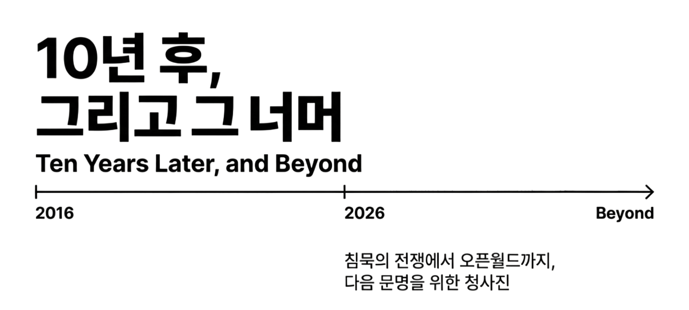
우리는 지금 거대한 전환점을 지나고 있다. 금융 질서가 흔들리고, 지정학이 균열되며, 인공지능이 인간 노동의 중심을 대체하는 국면. 이 변화는 문명의 작동 방식 자체가 바뀌는 구조적 전환이다. 총성과 국경을 넘어, 경제의 규칙과 정치 체계가 교체되는 전쟁. 이 글은 그 변화를 은유로서 ‘침묵의 제3차 세계대전’이라 부른다.
이 전쟁의 결과는 이미 예고되어 있다. 기존 질서는 유지되지 않는다. 문제는 무너질 것인가가 아닌, 무너진 뒤 누가 운영하는 질서 위에 살아가게 되는가다. 기술과 자본을 앞세운 소수의 ‘점령군’이 삶의 방식을 정의할 것인가, 아니면 다수의 인간이 새로운 기준을 함께 설계할 것인가.
이 시리즈는 그 질문에서 출발한다.
우리는 먼저, 지금의 혼란이 어디에서 비롯되었는지 짚는다. 금융 위기에서 시작된 구조적 붕괴, 지정학적 충돌, 그리고 인공지능이라는 기술이 어떻게 기존 사회를 초토화하고 있는지를 살핀다. 이어서 그 폐허 위에 등장하는 군복 없는 점령군, 디지털 네이션과 테크노크라시의 실체를 드러낸다. 그리고 다음으로, 과거의 언어로 현재를 설명하려는 망령들을 정리한다. 더 이상 작동하지 않는 좌표계를 내려놓지 않으면 어떤 설계도 현실이 될 수 없기 때문이다.
그러나 이 글의 목적은 비판에 머물지 않는다. 이 글이 말하는 혁명은 파괴가 아니라 전환이다. 소유의 재분배가 아니라, 시민의 지위 상승이다.
그 지점에서 하나의 질문이 등장한다.
“깨달음은 개인의 체험으로 끝나는가, 아니면 시스템이 될 수 있는가.”
여기서 말하는 ‘깨달음’은 세계의 관계와 흐름을 있는 그대로 보고, 자연의 질서에 맞게 사고와 행동의 기준이 정렬되는 상태다. 복잡함 속에서도 길을 잃지 않도록, 나의 선택이 전체에 만드는 파급까지 함께 감지하는 메타인지 능력이 회복되는 순간을 말한다. 이 회복이 고통을 줄이고 행복의 총량을 늘릴 수 있는지.
이 질문에 대한 답으로 제시되는 것이 오픈월드(Open World)다. 오픈월드는 운영 체계(OS)다. 인공지능이 담보하는 생산성 위에서, 인간의 다양한 활동을 사회적 가치로 정렬하고, 그 가치가 다시 분배·참여·협력으로 순환되는 세계 운영 표준. 탈출에서 응전으로, 선별에서 보편으로 나아가기 위한 문명의 설계도다. 그리고 이 설계는 반드시 인류 전체에 배포되어야 한다.
이 설계를 현실로 작동시키기 위한 지능이 ‘인류에 의한 AGI’다. 인간을 넘어서는 초월적 기계가 아닌, 인간 사회의 약한 고리를 메우고, 판단의 비용을 낮추며, 다수가 참여할 수 있는 구조를 가능하게 하는 문명적 신경망이다.
그리고 이 모든 것을 실행으로 옮기기 위한 네 개의 구조, DID, World model, AIDCG, Data Trust. 우리가 네 개의 기둥이라 부르는 핵심 전략이 이어진다.
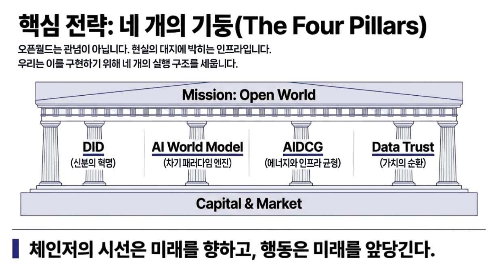
다만 이 지점에서 독자는 필연적으로 또 하나의 질문을 만나게 된다. 이렇게 거대한 운영 체계를 떠받칠 인프라는 어디서 오는가, 그 동력은 어떤 언어로 조달되고 유지되는가. 이 질문을 피한 설계는 언제나 선언으로 끝난다.
그래서 우리는 자본을 말한다. 자본을 선악으로 재단하지 않고, 미래를 현재로 끌어오는 기술로서 이해한다. 오픈월드는 자본을 적으로 두지 않는다. 자본이 시장의 생존 조건을 다시 계산하도록, 다수가 붕괴하지 않는 세계가 더 큰 수익이 되는 구조를 제시한다. 자본이 성숙해질 수 있는 경로를, 운영 표준으로 제안한다
마지막으로, 이 모든 이야기는 추상에서 끝나지 않는다. 한 개인이 이 질문을 먼저 통과해왔고, 그 개인이 ‘첫 번째 체인저’가 되기로 다짐하며 조직을 세웠다. 그리고 이제 그 다짐은 더 이상 혼자의 서사를 벗어나, 체인저스를 향한 초대장이 된다.
01
Chapter One
침묵의 제3차 세계대전
우리는 제3차 세계대전을 늘 ‘언젠가’의 사건으로 상상해왔다. 그러나 훗날의 역사가들은 2008년 리먼 브라더스 사태를, 그 전쟁이 조용히 발화한 첫 장면으로 기록할지도 모른다. 그것은 탱크와 미사일로 시작된 전쟁이 아니었다. 화폐에 대한 신뢰, 국가 간 질서, 노동의 가치라는 문명의 기초가 동시에 흔들리기 시작한 순간이었다.
이 전쟁은 침묵 속에서 진행되었다. 선전포고도 없었고, 명확한 전선도 없었다. 대신 금융 시스템의 균열로 시작되어 지정학적 충돌로 번졌고, 마침내 인공지능이라는 기술에 의해 기존 사회의 작동 원리 자체가 재편되는 방향으로 흘러왔다. 총성이 들리지 않았을 뿐, 문명은 이미 전쟁 상태에 들어와 있었다.
2008년 금융위기는 레버리지와 신용 확장에 의존하던 세계화 모델이 구조적 한계에 도달했음을 알린 사건이었다. 위기 이후 세계는 회복의 국면으로 돌아가지 않았다. 대신 위기를 연료 삼아 시스템을 연장하는 국면으로 진입했다. 민간 부채는 국가의 재정으로 이전되었고, 통화는 가치 저장 수단이 아니라 질서를 유지하기 위한 인공호흡기가 되었다.

이 지점에서 팍스 아메리카나는 균열되기 시작했다. 세계의 소비자이자 최종 수요자 역할을 수행하던 미국은 더 이상 그 부담을 감당할 수 없게 되었고, 그 결과 세계는 보호와 확장을 전제로 한 질서에서 각자 생존을 모색하는 구조로 이동했다. 미국의 변화는 선택과 집중이었다. 보편 질서를 관리하는 제국의 역할을 내려놓고, 핵심 자산을 요새화하는 방향으로 전략을 전환한 것이다.
공급망은 재편되었고, 제조업과 에너지, 반도체는 안보 자산이 되었다. 인공지능과 클라우드는 국가 경쟁력의 핵심 인프라로 재정의 되었다. 동맹은 가치의 공유가 아니라 목적의 일치에 따라 재구성되었다. 이 과정에서 다자 기구와 국제 규범은 급격히 힘을 잃었다. 평시의 질서를 전제로 설계된 대화와 합의의 장치는, 질서 자체가 붕괴하는 국면에서 속도를 늦추는 장애물로 인식되기 시작했다.
통제력이 약화된 세계에서 곳곳에서 물리적 충돌이 발생했다. 이는 단순한 영토 분쟁이 아니다. 에너지와 자원, 정권의 안정, 동맹의 재편이라는 세 가지 동기가 중첩된 결과이다. 러시아와 우크라이나의 전쟁은 식량과 에너지, 완충 지대를 둘러싼 구체제적 전쟁의 전형이다. 중동에서 반복되는 충돌 역시 외부의 적을 통해 내부 붕괴를 지연시키려는 체제 방어의 성격을 띤다.
그린란드와 베네수엘라를 둘러싼 지속적인 관심 또한 단일 사건이 아니다. 북극 항로, 희토류, 에너지, 기후 조건, 군사 거점이 복합적으로 얽힌 전략적 자산에 대한 장기적 이해관계의 표현이다. 이 전쟁의 핵심은 땅이 아니라, 다가오는 기술 시대를 지탱할 에너지와 자원의 통제에 있다.
물리적 전선에서 피가 흐르는 동안, 또 하나의 전선은 조용히 형성되고 있었다. 2020년 코로나19 팬데믹은 전시 동원 체계를 가동시킨 계기였다. 천문학적인 유동성과 재정 자금은 인플레이션을 유발했지만, 동시에 기술 기업과 인공지능 인프라로 집중되었다. 이 시기 인류는 스케일링 법칙이라는 단순하면서도 치명적인 원리를 발견했다. 데이터와 연산 자원을 투입하면 지능의 성능은 예측 가능하게 향상된다는 사실이다.
이는 과학적 발견인 동시에 금융 시장에 새로운 투자 언어를 제공한 발명이었다. 자본은 더 이상 공장이나 노동력을 향하지 않았다. 지능 그 자체가 투자 대상이 되었고, 클라우드와 데이터센터, 반도체와 알고리즘은 전시 산업으로 재편되었다. 이는 2차 세계대전 당시의 맨해튼 프로젝트와 유사한 성격의 총력 동원이었다.
인공지능의 등장은 전쟁을 총성과 함께 끝내지 않는다. 대신 경제 시스템 자체를 무력화하는 방식으로 종전을 강제한다. AI와 로봇은 정밀하게 인간 노동의 영역을 잠식한다. 화이트칼라와 전문직, 창작 노동은 예외가 아니다. 이는 선악의 문제가 아니다. 기계의 한계비용이 인간 노동의 시장 가격을 압도하는 구조적 변화이다.
그 결과 노동의 가격 결정력은 붕괴되고, 임금 분포는 하향 평준화된다. 인간의 역할은 점차 기계의 복제 비용에 수렴한다. 자본주의의 핵심 엔진이었던 노동 소득 격차는 무력화되고, 불평등은 해소되지만 그것은 번영의 결과가 아닌, 완전한 제로베이스 위에서 이루어진 평탄화이다. 사회는 기능을 상실한 폐허 상태에 가까워진다.
대규모 실업과 소득 붕괴가 임계점을 넘는 순간, 국가는 선택을 강요받는다. 통제 불능의 혼란을 방치할 것인가, 아니면 강제적 배분 시스템을 가동할 것인가이다. 이 선택의 순간이 새로운 사회계약의 출발점이다. 초기에는 충격을 완화하기 위한 임시적 장치가 작동하고, 이후에는 디지털 신원과 지급 인프라, 공공 AI 자산을 기반으로 한 배분 체계가 구축된다. 최종적으로는 보편적 기본 자산이라는 형태로 제도화된다.
여기서 중요한 것은 현금이 아니다. 주거, 의료, 교육, 에너지, 통신에 대한 기본적 접근권이다. 이는 인플레이션을 자극하지 않으면서도 인간의 존엄을 유지하는 최소 조건이다. 이 새로운 질서에서 인간은 더 이상 생산의 핵심 요소가 아니다. 기계가 생산하고, 인간은 그 결과를 소비하며 해석한다.
노동으로 인간을 정의하던 시대는 막을 내린다. 인간은 기계가 만들어낸 풍요 위에서 관계를 맺고, 문화를 만들고, 질문을 던지는 존재로 재정의된다. 이는 퇴행이 아니라, 인간이 무엇을 위해 존재하는가라는 오래된 질문으로의 회귀이다.
2008년 리먼 사태는 침묵 속에서 울린 공습경보였다. 이후 이어진 금융 불안과 지정학적 충돌, 기술 패권 경쟁은 구시대가 무너지는 과정이었다. 인공지능은 이 전쟁을 끝내기 위해 투입된 최종 무기이다. 그 방식은 잔혹하다. 인간의 노동과 기존 질서를 철저히 초토화한다. 그러나 그 폐허 위에서 인류는 노동으로부터의 해방이라는 오래된 꿈을 다시 쓰기 시작한다. 전쟁은 언제나 비극이지만, 그 끝은 늘 새로운 시대의 시작이다.
02
Chapter Two
점령군
전쟁이 휩쓸고 간 자리에 가장 먼저 들어오는 것은 평화가 아니다. 운영 권력이다. 초토화된 공간은 비어 있는 듯 보이지만, 문명이 한 번 무너지면 그 자리는 곧바로 누군가의 운영 체계로 채워진다. 역사에서 그것은 군대였고, 총독부였고, 점령 행정이었다. 이번에는 형태만 달라졌다. 군복 대신 서버와 알고리즘, 클라우드와 프로토콜이 들어온다.
이때 ‘점령군’은 특정한 국가나 기업을 뜻하지 않는다. 점령군은 우리가 비워둔 자리에서 시작된다. 책임을 비워둔 자리, 결정을 미뤄둔 자리, 기준을 합의하지 않은 자리. 그 공백은 반드시 형태를 찾는다. 그리고 가장 먼저 들어오는 것은 대개 ‘편의’와 ‘효율’의 얼굴을 한 지배다. 사람들은 그것을 점령으로 부르지 않는다. “혁신”, “구조조정”, “최적화” 같은 말로 환영한다. 그러나 운영이 자리를 잡는 순간, 삶의 정의는 바뀐다. 시민은 사용자로 바뀌고, 권리는 접근권으로 바뀌며, 정치는 약관으로 바뀐다.
실리콘밸리는 이 흐름을 가장 선명하게 체계화한 곳이다. 그들이 제시하는 미래는 하나의 문장으로 요약된다. 국가를 수리하는 비용을 내느니, 새로운 운영체계를 만든다. 그들의 세계관에서 국가는 신성한 공동체가 아니라 레거시 시스템이다. 고장난 시스템은 패치하는 대신 교체한다. 그 교체의 도구가 기술이며, 그 교체의 자본이 투자다. 기존 국가를 탈출하여 엘리트들만의 세계를 꿈꾸는 디지털 네이션의 대두다.
발라지 스리니바산이 말하는 ‘네트워크 국가’는 점령의 절차를 단계로 보여준다. 먼저 온라인에서 결속하고, 다음으로 디지털 신원을 만들고, 그다음으로 경제와 규칙을 구성하고, 마지막에 물리적 땅을 확보한다. 이 구조에서 국경은 기능을 잃고, 여권은 암호화된 신원으로, 헌법은 계약과 코드로 번역된다. 국가는 땅이 아니라 프로토콜로 시작된다.
피터 틸의 상상력은 더 단호하다. 그는 자유와 민주주의의 긴장을 전제로, 대중적 합의가 갖는 지연과 비용을 문제로 삼는다. 그래서 그가 꿈꾸는 탈출의 형태는 규제와 정치가 닿지 않는 공간이다. 해상 도시든, 기술 특구든, 목적은 하나다. 선출과 책임의 무게를 벗고, 효율과 투자수익률의 문법으로 운영되는 체계를 세우는 것. 국가의 형태를 지우고, 주식회사처럼 움직이는 질서를 상정하는 것이다.
이 흐름의 위험은 기술의 우월성에 있지 않다. 위험은 정당성의 구조에 있다. 기존 정치 권력은 불완전했지만, 최소한 선출과 책임이라는 장치를 갖고 있었다. 반면 새로운 운영 권력은 선출에서 시작하지 않는다. 운영 권력은 네트워크 효과와 자본, 기술적 우위를 기반으로 사실상의 통치자가 된다. 이때 통치는 정치가 아니라 운영이 된다. 운영의 핵심은 합의가 아니라 서비스 품질이고, 책임의 단위는 시민이 아니라 고객 지원이다. 항의는 시위가 아니라 문의가 되고, 반대는 반역이 아니라 약관 위반이 된다.
점령은 폭력의 형태로만 오지 않는다. 점령은 대행의 형태로 온다. 국가가 느리고, 제도가 굼뜨고, 사회가 갈라질수록 사람들은 점점 더 많은 것을 외부에 맡기고 싶어진다. 복잡한 문제를 대신 판단해줄 누군가, 얽힌 이해관계를 대신 정리해줄 누군가, 지금 당장의 불편을 덜어줄 누군가. 그렇게 우리는 책임을 외주화한다. 그리고 책임을 외주화한 자리에서 운영 권력이 자란다.
여기서 디지털 네이션은 점령군의 한 예시에 불과하다. 점령군의 본질은 특정한 이름 보다는, 우리가 비워둔 자리다. 공백은 반드시 형태를 찾는다. 가장 먼저 들어오는 것은 대개 편의와 효율이다. 그 순간, 인간은 선택의 주체에서 최적화의 대상이 된다. 사회는 공동선의 합의에서 KPI의 관리가 된다. 민주주의의 언어는 유지되지만, 삶의 실제는 기술과 자본을 갖춘 운영자들의 콘솔에서 조정된다.
더 치명적인 문제는 이 체계가 태생적으로 선별을 전제로 한다는 점이다. 효율은 언제나 제한된 리소스에서 시작되고, 제한된 리소스는 결국 탑승자를 가른다. 그래서 기술의 유토피아는 종종 모두를 위한 구원이 아니라, 소수를 위한 방주가 된다. 탑승한 사람들은 안전해지지만, 탑승하지 못한 사람들은 초토화된 시장에 남는다. 공공성이 빠진 자리에서 남겨진 다수는 보호받지 못한다. 그 다수는 정치적 시민이 아니라 서비스의 외부인이 된다. 이 지점에서 점령은 더 이상 은유가 아니다. 삶의 조건 자체가 갈라지기 시작한다.
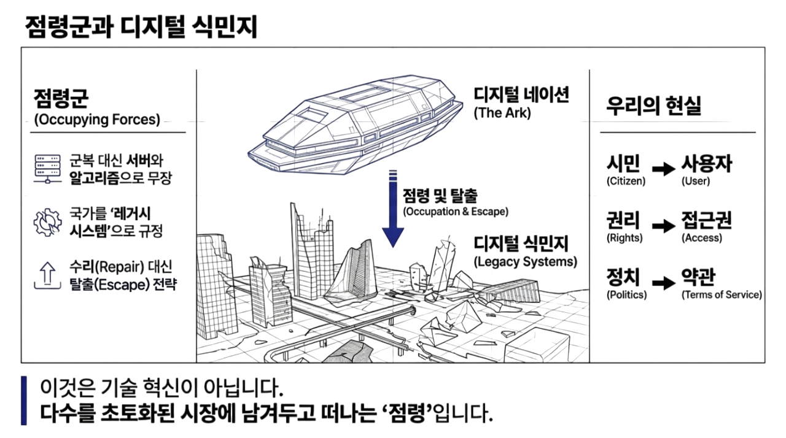
그리고 여기서 우리가 마주하는 질문은 기술이 옳으냐 그르냐가 아니다. 질문은 주권이 어디에 놓이느냐다. 누가 삶의 기준을 정하는가. 누가 분배의 규칙을 정의하는가. 누가 신뢰의 기록을 소유하는가. 누가 오류의 책임을 지는가. 이 질문에 답하지 못하는 사회는 결국 가장 편한 운영자를 선택한다. 그 선택은 의식적인 항복이 아니라, 피로한 사람들의 자연스러운 이완으로 이루어진다. 점령군은 총을 들고 오지 않는다. 점령군은 우리가 내민 열쇠를 받아 들어온다.
그래서 다음 전쟁은 총을 들지 않는다. 그리고 다음 저항도 총으로 이루어지지 않는다. 전장은 기술이 아니라 기술의 주권이다. 점령군을 몰아내는 싸움이 아니라, 점령이 들어올 문을 닫는 싸움이다. 기술을 거부하는 저항이 아니라, 기술의 소유와 운영과 책임을 되묻는 저항이다. 효율을 포기하는 저항이 아니라, 효율이 공동선을 대체하지 못하도록 기준을 세우는 저항이다.
초토화 이후의 세계에서 가장 중요한 질문은 이것이다.
우리는 누가 운영하는 질서 안에서 살아갈 것인가.
그리고 그 질서는 우리 모두를 위한 것인가, 아니면 소수만을 위한 것인가.
03
Chapter Three
망령을 죽이는 자
전쟁이 끝난 자리에 가장 먼저 나타나는 것은 새로운 질서가 아니라 오래된 언어이다. 사람들은 폐허 앞에서 아직 말로 붙잡을 수 있는 것을 찾고, 그 과정에서 가장 익숙한 개념들을 다시 꺼내 든다. 이해할 수 없는 변화 앞에서 인간은 늘 과거의 문법으로 현재를 해석하려 한다. 그래서 초토화된 세계의 공기 속에는 언제나 망령이 떠돈다.
그 망령들은 한때 살아 있었던 사상들이다. 자본과 노동, 생산수단과 소유, 계급과 혁명이라는 언어들이다. 생산시설의 독점화가 가속되고 부의 양극화가 눈앞의 현실로 다가오면, 사람들은 자연스럽게 과거의 사상가들을 호출한다. 막스의 이름이 다시 불리고, 자본론의 문장이 인용되며, 문제는 다시 소유 구조의 전복으로 환원된다. 마치 그 언어들만이 이 혼란을 설명할 수 있다는 듯이, 사람들은 죽은 자들의 말을 빌려 현재를 이해하려 한다.
그러나 그것들은 망령이다. 한 시대의 현실을 정확히 꿰뚫었던 사유가 시간이 흐르며 현실과 분리된 채 남아 있는 잔상이다. 그 사상들은 생산이 희소했고, 노동이 가치의 근원이었으며, 물질적 생산수단을 누가 소유하는가가 곧 권력이던 시대의 산물이다. 지능이 복제되고, 생산의 한계비용이 사라지며, 기술과 운영이 권력의 핵심이 된 세계에서는 그 좌표계 자체가 더 이상 현실을 붙잡지 못한다.
그럼에도 망령은 쉽게 사라지지 않는다. 인간은 새로운 언어를 만들기보다 익숙한 언어에 기대는 존재이기 때문이다. 그래서 다음 시대의 초입에는 필연적으로 소요가 발생한다. 플랫폼과 알고리즘의 권력을 공장과 토지의 독점으로 치환하고, 그 해법을 국유화나 몰수, 강제적 재분배에서 찾으려는 움직임이다. 이는 이해의 지연에서 비롯된 몸부림이다.
하지만 그 방식은 문제를 해결하지 못한다. 왜냐하면 이 시대의 권력은 소유의 관점 보다는 운영에 있기 때문이다. 플랫폼은 빼앗는다고 사라지지 않고, 알고리즘은 국유화한다고 민주화되지 않는다. 공장을 접수하듯 코드를 점령할 수 없고, 서버를 몰수한다고 기준이 바뀌지 않는다. 지금의 문제는 누가 가지는가가 아니라, 누가 정하는가이다. 무엇이 보이고, 무엇이 추천되며, 무엇이 배분되는지를 누가 결정하는가의 문제이다.
그래서 이 지점에서 망령을 죽이는 자가 등장한다. 그는 과거를 부정하지 않는다. 오히려 과거의 사상가들에게 마지막 존엄을 부여한다. 당신들이 싸웠던 전쟁은 끝났다고, 당신들의 언어는 그 시대를 구했고, 이제는 쉬어도 된다고 말한다. 망령을 죽인다는 것은 파괴가 아니다. 안식이다. 더 이상 호출되지 않게 만드는 것이다.
망령을 죽이는 자가 이끄는 혁명은 소유의 재분배가 아니다. 그것은 시민 다수의 지위를 끌어올리는 혁명이다. 누군가의 것을 빼앗아 나누는 방식이 아니라, 다수가 설 수 있는 위치 자체를 상향시키는 방식이다. 기술은 그 수단이다. 디지털 네이션이 기술의 편의성을 극한까지 밀어붙여 소수의 방주를 만든다면, 이 혁명은 같은 기술을 사용해 대다수의 인간을 끌어올린다.

여기서 기술은 지배의 도구가 아니다. 접근의 사다리이다. 알고리즘은 통제 장치가 아니라 판단 보조 장치가 되고, 플랫폼은 감시의 공간이 아니라 협력의 공간이 된다. 시민은 더 이상 보호받는 객체도, 서비스의 사용자도 아니다. 시민은 기준을 함께 조정하는 주체가 된다. 무엇이 공정한가, 무엇이 우선되는가, 무엇이 자동화되어야 하는가에 다수가 개입할 수 있는 구조가 만들어진다.
이 혁명은 요란하지 않다. 총성이 울리지 않고, 몰수가 일어나지 않으며, 상징적인 파괴도 없다. 대신 아주 조용하게 기준이 바뀐다. 추천의 알고리즘이 달라지고, 배분의 규칙이 수정되며, 접근권의 문턱이 낮아진다. 그러나 이 변화는 어떤 폭력보다도 급진적이다. 왜냐하면 사람들의 삶의 궤적 자체가 달라지기 때문이다.
망령을 죽이는 자는 영웅이 아니다. 그래서 하나의 인물일 필요도 없다. 그것은 집단일 수도 있고, 제도일 수도 있으며, 하나의 프로토콜이나 합의된 규칙일 수도 있다. 중요한 것은 인물이 아니라 방향이다. 기술을 독점의 도구로 사용하는 방향이 아니라, 인간의 지위를 상승시키는 레버리지로 사용하는 방향이다.
그래서 이 혁명은 인간을 보호하기 위해 기술을 제한하지 않는다. 인간을 확장하기 위해 기술을 연다. 노동을 지키기 위해 자동화를 늦추지 않고, 자동화를 통해 인간을 노동으로부터 해방 시킨다. 인간은 다시 생산의 하단에서 벗어나 판단과 의미의 영역으로 이동한다.
망령은 그렇게 죽는다. 불태워지지 않고, 부정되지 않고, 더 이상 필요 없어짐으로써 사라진다. 그리고 그 자리에 남는 것은 새로운 인간이다. 생산의 체인에 묶인 인간이 아니라, 시스템의 지평 위에 서 있는 인간이다. 이것이 다음 시대의 진짜 혁명이다. 그리고 이 혁명은 이미 시작된 상태이다.
04
Chapter Four
서막
크리스마스였다. 강남대로에 길게 이어진 애드벌룬에는 사람들의 소원이 빼곡히 적혀 있었다. 수많은 인파가 그 앞을 지나며 저마다의 바람을 남겼고, 그것들은 하나의 풍경 이면에 하나의 밀도처럼 느껴졌다. 그날 나는 개별적인 소원을 보지 않았다. 소원과 소원이 엮이며 만들어낸 하나의 마음을 보았다. 전체는 부분의 합보다 컸다. 아, 연결된 전체는 이런 것이구나 싶었다. 교과서에서 본 원효의 해골물 일화가 이해가 가는 순간이었다.
그 순간 알았다. 더 이상 이전의 인생으로는 돌아갈 수 없다는 것을. 나는 그날 어떤 계시를 본 것이 아니었다. 다만 흩어진 바람들이 한곳에 모일 때 생기는 전체의 압력을 처음 체감했다. 개별의 소원은 각각 달랐지만, 그 아래에 깔린 결핍과 바람은 하나의 방향으로 기울어 있었다. 그때부터 질문이 달라졌다. “나는 무엇을 원하나”가 아니라, “이 많은 바람이 향하는 방향을 어떻게 현실로 바꿀 수 있나”였다.
생애를 둘러싼 실존적 질문이 그날 하나의 방향으로 정리되자, 전혀 다른 질문이 떠올랐다.
깨달음은 개인의 체험을 넘어서 시스템이 될 수 있는가라는 질문이었다.
깨달음이라는 추상적 상태를 이 세계의 논리로 번역할 수 있는가. 질문에 답하기 위해 학문의 원리를 파고들었고, 그것들을 하나의 구조로 엮기 시작했다. 철학과 종교, 물리와 문학, 경제와 정치, 심리와 정보 이론이 따로 존재하는 것이 아니라, 서로 다른 각도에서 같은 대상을 설명하고 있다는 감각이 생겨났다.
그 시기에 나는 머신러닝이라는 개념이 기술 트렌드가 아닌 빅데이터와 맞물릴 필수요소로 인식하게 되었다. 정보의 패턴을 추출하는 도구가 마침내, 비즈니스의 작동 방식을 바꾸는 매개라는 확신이었다. 그래서 2011년 겨울, 스타트업을 창업했다. 그러나 그 이후의 시간은 연속된 실패였다. 기술은 앞서 있었지만 자본은 없었고, 비전은 있었지만 시장은 준비되어 있지 않았다. 무엇보다 나는 사업가의 언어보다 질문자의 언어에 더 익숙한 사람이었다.
그 실패들은 나를 세상의 중심에서 밀어냈고, 나는 세상의 가장 낮은 지점들로 들어갔다. 새벽 청소와 건설 현장, 물류창고와 마트, 보험 영업과 자영업까지. 이 일들의 공통점은 하나였다. 인간은 삶이 아니라 비용으로 평가된다는 사실이었다.
그 과정에서 나는 자본주의라는 시스템을 학교가 아닌 현장에서 배웠다. 시급 계약 외의 인간 활동은 가치로 상정되지 않는 구조를 보았다. 성실함과 책임감, 배려와 연대는 숫자로 환산되지 않았고, 오직 시간당 얼마라는 기준만이 인간을 평가했다. 노동시장은 인간의 삶을 고려하지 않았다. 그것은 비용과 효율의 문제였다.
그 현장에서 만난 사람들은 통계가 아니었다. 각자의 삶을 떠안고 살아가는 가족이었고, 공동체의 구성원들이었다. 중년의 가장이 가진 무력감, 청년이 느끼는 구조적 좌절, 노년의 불안, 여성 노동자가 감내하는 이중의 부담이 매일의 대화 속에 녹아 있었다. 그 애환과 고민은 개인의 실패가 아니라 사회구조의 결과였다. 나는 그 사실을 머리로가 아니라 몸으로 이해하게 되었다.
이 모든 의문의 정점에서 삶의 체증이 한꺼번에 밀려와 숨을 헐떡이고 있을 때, 이세돌과 알파고의 대국이 열렸다. 그 장면은 지금 열린 인공지능 시대의 상징적인 사건이었다. 인간이 인간 자신을 정의해온 기준이 무너지는 순간이었다. 그때 나는 인공지능은 산업을 넘어서 문명의 기준을 다시 쓰는 도구라는 것을 확신했다.
그리고 2016년 11월, 마침내 한국인공지능협회를 만들기 위한 요소들이 하나둘 모이기 시작했다. 기술에 대한 이해, 제도에 대한 문제의식, 현장에서 체득한 노동의 현실, 그리고 무엇보다 인간을 중심에 두지 않으면 안 된다는 확신이 하나의 방향으로 수렴되었다. 그것은 조직을 만들기 위한 준비라기보다, 시대가 요구하는 형태를 빚어가는 과정이었다.
구시대의 엔트로피가 막바지로 치달을 때, 나는 청년기의 한복판에서 세상의 정보와 삶의 경험이 한꺼번에 몰려드는 시간을 통과했다. 그 밀도는 나를 잠시 세계의 겉면 밖으로 밀어냈고, 나는 언어로 다 담을 수 없는 번쩍이는 실상을 먼저 본 것 같았다. 그것은 특권도, 선택도 아니었다. 다만 수많은 조건이 겹친 결과, 한 사람이 먼저 통과해버린 경로에 가까웠다. 그래서 알게 되었다. 그것이 나 하나의 체험으로 끝나서는 아무 의미가 없다는 것을.
이 인식은 개인의 도약이 아니라, 다수가 함께 건너야만 다음 단계로 넘어갈 수 있는 시작점이다. 내가 본 것은 목적지가 아니라 예고편이었고, 그 체험은 나로 끝나기 위해 주어진 것이 아니라 모두가 반드시 거쳐야 할 과정을 미리 통과해본 것이었다. 그것이 구조로 번역되지 않으면, 시스템으로 구현되지 않으면, 다시 소수의 체험으로 사라진다는 것을 알았다. 한국인공지능협회는 그래서 탄생했다. 기술을 위한 조직이 아니라, 인간에 의해 기준을 세우기 위한 시도였다.
05
Chapter Five
이름을 입은 자
이름을 입는다는 것은 존재를 감당하는 일이다. 한국인공지능협회라는 이름은 처음부터 나의 크기를 넘어서는 것이었다. 아무것도 없던 상태에서 그 이름을 입었을 때, 그것이 나를 보호해줄 것이라는 기대는 없었다. 오히려 그 이름이 나를 먼저 시험할 것이라는 예감이 더 컸다. 너무 큰 이름은 사람을 키워주지 않는다. 먼저 짓누른다. 그 무게를 견디지 못하면 이름은 껍질로 남고, 사람은 그 안에서 사라진다.
협회의 시작은 거창하지 않았다. 뿌리는 2012년부터 이어져 오던 스타트업 커뮤니티였다. 그리고 2016년, 그 모임은 마침내 ‘한국인공지능협회’라는 이름을 입었다. 우리는 기술을 이야기했지만 기술만을 이야기하지 않았고, 사업을 논했지만 돈만을 좇지 않았다. 인공지능이 도래시킬 시대상을 피할 수 없는 운명으로 받아들이지 않고, 우리가 선택할 수 있는 미래로 만들고 싶었다. 더 나은 세상을 만든다는, 스타트업이라는 이름 아래 공유되던 가장 단순한 믿음. 협회는 그렇게 출발했다.
그 무렵 나는 삶의 밑바닥에 가까운 곳에 있었다. 가진 것도, 배경도, 확실한 미래도 없었다. 그러나 동료들이 나타났다. 처음에는 몇 사람이었고, 이후에는 몇 개의 기업이었으며, 그 다음에는 산업과 생태계가 되었다. 우리는 전략으로만 성장하지 않았다. 다만 필요가 생길 때마다 그 자리를 메웠다. 질문이 나오면 답을 찾았고, 단절이 보이면 연결을 시도했으며, 아무도 책임지지 않는 영역이 생기면 그곳에 먼저 들어갔다.
그렇게 회원사가 모였고 조직이 만들어졌으며, 어느 순간 우리는 외견상으로도 상당한 규모의 협회가 되어 있었다. 그러나 밖에서 보이는 성장 곡선과 안에서 체감하는 시간의 밀도는 전혀 달랐다. 지난 10년은 확장이 아니라 압축에 가까웠다. 하루에도 수많은 이해관계가 충돌했고, 국가 간의 전략이 산업 정책이라는 이름으로 내려왔으며, 부처와 예산, 기관과 기관 사이의 알력 구조 속에서도 매일을 그려갔다.
기업은 생존의 경계에 서 있었고, 개인은 불확실한 미래 앞에서 결정을 유예하고 싶어 했다. 그 모든 지점에서 협회는 조정자의 위치에 서야 했다. 조정자는 고독하다. 누구의 편도 아닌 자리에 서서, 모두의 말을 듣고, 최종적으로는 결정을 내려야 한다. 수없이 도망치고 싶었다. 이 역할이 과연 나의 몫인가 되물었던 밤이 셀 수 없었다.
그러나 그 인내의 상황 속에서도 나는 협회라는 조직이 가진 잠재력을 누구보다 잘 알고 있었다.
국가는 너무 느렸다.
기업은 너무 편향되어 있었다.
개인은 너무 취약했다.
이 세 조건이 동시에 성립하는 시대에서 협회는 필연이었다. 협회는 속도를 낼 수 있었고, 어느 한쪽의 이익에 종속되지 않을 수 있었으며, 흩어진 개인과 기업, 시민과 제도를 연결할 수 있는 유일한 형식이었다. 협회는 권력을 가지기 위한 조직이 아니라, 무너지는 균형을 유지하기 위한 장치였다.
이 인식은 앞서 말한 ‘디지털 네이션’이 제시하는 미래와도 분명히 갈라진다. 실리콘밸리의 엘리트들이 꿈꾸는 디지털 네이션은 효율과 최적화를 앞세워 소수만을 ‘방주’에 태운다. 그것은 탈출과 선별을 전제로 한 질서이다.
반면 협회가 선택한 길은 ‘응전’이었다. 이 사회 안에서, 이 불완전한 제도 안에서, 이 사람들과 함께 다음 단계로 넘어가는 길이었다. 엘리트의 도피가 아니라, 다수의 지위 상승을 전제로 한 시도였다.
그래서 협회는 기업들의 이익 집단이 되지 않았고, 정부의 관변 단체가 되지도 않았다. 특정 이념의 대변자도 아니었다. 협회는 현장에서 버티는 사람들의 언어를 정책의 언어로 번역하고, 기술의 가능성을 시민의 기준으로 풀어내는 ‘회색지대’였다. 그 중간에 서는 일은 언제나 가장 공격받기 쉬운 자리였다. 그러나 누군가는 그 자리에 서 있어야만 했다.
지금 돌아보면 지난 10년은 나와 동료들이 여러 생을 압축적으로 살아낸 시간이었다. 기업의 언어와 행정의 언어, 기술의 언어와 시민의 언어를 동시에 배워야 했다. 어느 하나에만 서면 나머지가 무너졌다. 그래서 늘 불완전한 상태로 결정을 내려야 했다. 그 불완전함을 견디는 것이 리더십이라는 사실을, 나는 그 시간 속에서 온몸으로 배웠다.
이 모든 것을 버틸 수 있었던 이유는 단 하나다. 협회가 처음부터 분명한 정신 위에 세워졌기 때문이다. 우리는 인공지능으로 벽을 만들지 않겠다고 선언했다. 기술을 독점의 언어로 사용하지 않고, 세상과 소통하는 주제로 삼겠다고 약속했다. 협회의 문은 전문가에게만 열려 있지 않았다. 인간과 시대에 대해 질문을 던지는 모든 이들에게 열려 있었다. 기술의 진보는 사회의 의식적 성숙도와 집단지성과 균형을 이루어야 한다고 여겼다.
우리는 기술적 상승이 반드시 인간을 향해야 한다고 믿었다. 그래서 협회는 언제나 효율보다 존엄을 먼저 놓았고, 단기 성과보다 장기 기준을 선택했다. 그 선택은 늘 쉬운 길이 아니었다. 그러나 그 기준이 있었기에 우리는 흔들리면서도 결코 무너지지는 않았다.
그리고 10년이 지난 지금, 나는 이 모든 노력이 하나의 거대한 질문으로 수렴하고 있음을 깨달았다.
“인공지능 시대, 문명의 기준은 누가 세우는가.”
지금까지의 10년은 그 질문을 감당할 자격을 얻기 위해 이름을 입고 버텨낸 시간이었다. 이제 다음 단계는 그 이름이 무엇을 기준으로 삼을 것인지를 명확히 하는 일이다. 협회의 미션은 그동안 추상적이었다. 인공지능 시대 문명의 기준을 세운다는 선언이었지만, 아직 구체적인 형태는 아니었다. 그 추상을 실체로 바꾸는 작업이 이제 우리 앞에 남아 있다.
06
Chapter Six
미션, 오픈월드
우주는 닫힌계의 언어로 보면 서서히 식어가는 엔트로피의 현장이다. 만물은 역시 생로병사의 굴레라는 무질서에서 자유로울 수 없었다. 그러나 기적은 언제나 밀도에서 일어난다.
정보와 입자의 밀도가 임계점까지 응집된 곳에서 태양과 같은 뜨거운 에너지가 발산되고, 그 온기 속에서 비로소 지구는 다양한 환경을 갖춘다. 이내 그 환경에 적응하는 생명과 지능이 출현하여, 상호작용의 밀도를 높임으로써 거대한 엔트로피의 흐름을 지연(네겐트로피)시킨다.
무질서가 우주의 숙명처럼 보이지만, 존재와 존재 사이의 연결, 즉 '관계의 밀도'를 높이는 것만이 닫힌계의 벽을 넘어 열린계(Open System)로 나아갈 유일한 힘이다. 그렇기에 우리는 이 차가운 우주를 따뜻한 온기와 긍정의 가능성이 숨 쉬는 곳으로 끊임없이 열어갈 수 있는 것이다.
우리는 이 우주적 원리를 문명에 적용하여 ‘오픈월드(Open World)’라는 것을 만들었다. 오픈월드의 논리는 명확하다.
의식은 세계를 경험한다. 그 경험의 축적은 깨달음에 도달한다. 여기서 말하는 깨달음은 종교적 신비가 아니다. 그것은 뇌과학적 관점에서 '메타인지'가 확장된 상태로써 자연의 흐름과 관계를 있는 그대로 보고, 자연의 질서대로 사고하고 행동하는 가장 선명한 사건이다. 그리고 지능은 이 자연의 질서를 탐색하고 현실에 구현하는 기능이다.
질서는 무질서를 지연시킨다. 무질서는 닫힌계의 현상이지만, 질서는 오직 열린계를 통해서 유입된다. 가장 중요한 결론은 이것이다. 깨달음이 곧 질서라면, 그것은 시스템화 될 수 있다.
“깨달음은 개인의 체험으로 끝나는가, 아니면 시스템이 될 수 있는가.”
만약 깨달음이 자연의 질서와 동기화되는 상태라면, 그 기준은 학습될 수 있고, 구조로 구현될 수 있다. 시스템이란 결국 특정한 선택이 반복되도록 유도하는 보상과 제약의 묶음이기 때문이다. 그렇다면 깨달음이 시스템이 된다는 말은, 인간에게 도덕심을 요구하는 것이 아니라, ‘선한 행위’가 자연스럽게 이익이 되도록 구조를 설계한다는 뜻이다.
오픈월드는 바로 그 가능성, ‘열린계의 질서’를 문명으로 구현한 운영 체계(OS)다.
나는 오픈월드를 이렇게 정의한다. “인공지능이 담보하는 생산성 위에서, 인간의 다양한 경험과 활동을 사회적 가치로 정렬하고, 그 가치가 다시 분배와 참여, 협력으로 순환되는 세계 운영 표준.”
여기서 ‘오픈’은 블록화를 막고 연결을 추동하는 열린계의 구조다. 이때 삶은 획일화 되지 않고, 개인은 각자도생하지 않으며, 집단은 상호운용되며, 정책은 검증 가능하고, 참여는 배제되지 않는다. ‘월드’는 범위의 과장이 아니라 지속적인 질서를 추구하는 책임의 선언이다. 어느 국가나 기업이 띄운 닫힌 ‘방주’를 부정하고, 혼란 속에 흩어진 인류가 함께 딛고 설 수 있는 '공통의 토대'를 만들겠다는 뜻이다.
이 체계는 단순한 사상의 조합이 아니라 운영 논리의 통합이다. 물리학의 흐름을, 수학의 논증을, 컴퓨터과학의 구조를 가져온다. 경제학은 인센티브를, 정치철학은 정당성을, 윤리학은 방향을 제공한다. 오픈월드는 이념으로 세계를 재단하지 않는다. 관계로부터 세계를 정렬한다. 이것은 이념이 아니라 이론적 체계다. 가치를 정의하고, 활동을 측정하며, 평가를 학습시키고, 분배를 설계한다.
이 지점에서 경제의 패러다임은 바뀐다. 산업화 시대의 정치는 노동을 조직했고, 근대 경제는 임금이라는 단일한 잣대로 인간의 시간을 환산해왔다. 그러나 인공지능이 노동을 대체하고 생산성이 구조적으로 상승하는 시대에, 이 낡은 싸이클은 힘을 잃는다. 임금이 사라지는 것이 아니라, ‘근로소득’이라는 범주가 문명의 중심에서 물러나는 것이다. 인간의 삶은 더 이상 출근과 퇴근 사이에만 존재하지 않기 때문이다.
돌봄과 학습, 창작과 연구, 공동체 기여와 문제 해결, 환경의 회복. 이 활동들은 시장 가격으로 표현되지 않았을 뿐, 문명을 유지해온 핵심적인 시간들이었다. 오픈월드는 인간의 시간을 노동과 비노동으로 나누지 않는다. 문명에 기여하는 모든 시간을 가치의 스펙트럼 위에 올려놓는다. 그래서 소득은 단일하지 않다. 참여소득, 학습소득, 데이터소득, 창작소득, 배당소득이 한 개인의 삶 안에서 포트폴리오처럼 구성된다. 중요한 것은 개인의 자아 실현이 사회적 가치로 이어지고, 그 가치가 다시 공동의 기반을 강화하는 선순환(Feedback Loop)을 만드는가이다. 이것이 바로 개인의 욕망과 문명의 발전이 충돌하지 않고 한 방향으로 흐르는 '위대한 정렬'이다.
이 구조 안에서 시민의 정의도 달라진다. 오픈월드의 시민은 보호받아야 할 약자도, 시장에 방치된 고립된 개인도 아니다. 그들은 인공지능으로 증강된 강한 개인이다.
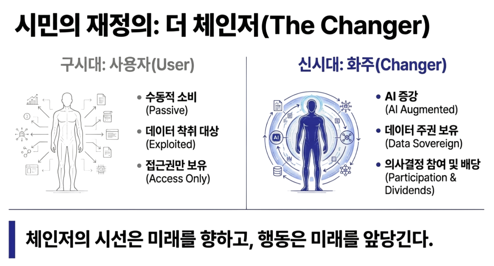
나는 이들을 ‘체인저(Changer)’라 부른다. 이는 ‘화주(化主)’의 현대적 번역이다. 인공지능 시대에 변화에 휩쓸리는 객체가 아니라, 스스로 변화를 일으키고 주관하는 주인이라는 뜻이다.
체인저는 2부의 점령군이 정의한 수동적 ‘사용자(User)’가 아니다. 그들은 AI를 통해 판단 능력을 확장하고, 정보 비대칭을 넘어서며, 자신의 선택이 사회에 미칠 파급을 인식하는 주체다. AI는 체인저를 대신해 결정하지 않는다. 요약하고, 비교하고, 시뮬레이션하여 개인의 판단력을 증폭시킨다. 체인저는 기준을 소비하는 자가 아니다. 기준을 함께 조정하는 시민이다. 무엇이 우선되어야 하고 무엇이 자동화되어야 하는지에 개입한다. 이때 깨달음은 개인적 선함이나 이타성에 머물지 않고, 보상의 설계로, 참여의 구조로 스며든다. 깨달음은 그렇게 시스템이 된다.
이 구조를 세계 규모로 구동시키기 위해서는 새로운 정치의 형식이 필요하다. 오픈월드의 정치는 권력을 뺏는 투쟁이 아니다. 문명이 작동하는 운영 표준을 확산시키는 ‘프로토콜 운동’이다. 국경 안에서 적을 만드는 방식이 아니라, 국경을 넘어 기준을 공유하는 방식이다. 정치는 선동이 아니라 정렬(Alignment)이어야 한다. 인공지능은 통치권력이 아니라 개인이 사회에 적극 참여하도록 돕는 인프라가 된다.
그래서 이것이 한국인공지능협회의 미션이 된다.
오픈월드는 선의만으로 작동하지 않는다. 선함이 이익이 되려면, 계산되어야 하고, 검증되어야 하며, 상호운용되어야 한다. 이 모든 조건을 현실로 만드는 핵심 인프라가 바로 인공지능이다. 인공지능은 생산성 도구를 넘어, 사회적 가치의 평가 비용과 이해관계 조정 비용을 획기적으로 낮춘다.
협회는 그 사이에 선 형식이다. 국가의 속도와 기업의 편향 사이에서, 산업의 역량과 공공의 기준을 연결하는 자리다. 권력 보다는 표준을 세우는 자리, 독점 보다는 참여를 설계하는 자리다.
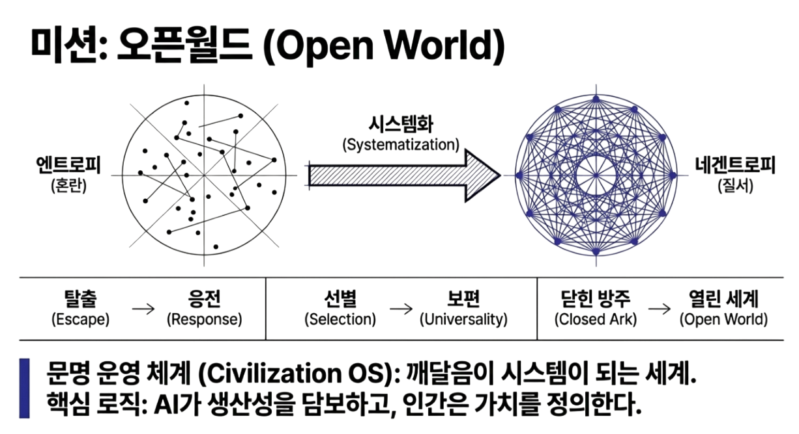
오픈월드는 한 문장으로 수렴된다.
“인공지능이 생산성을 담보하는 시대에, 그 생산성이 소수의 점령으로 귀결되지 않도록, 다수의 체인저가 참여하고 순환시킬 수 있게 만드는 문명의 운영 표준.”
탈출이 아니라 응전으로, 선별이 아니라 보편으로, 점령이 아니라 주도라는 기준으로. 우리는 오픈월드를 선언한다. 이것은 한 조직의 구호가 아니라, 혼란에 빠진 인류에게 제안하는 초대장이다. 그리고 그 제안을 다음 10년 동안 현실로 구현하는 것, 그것이 우리의 임무다.
07
Chapter Seven
비전, 인류에 의한 AGI
지난 10년 동안 한국인공지능협회의 비전은 분명했다. 인공지능의 민주화, 그리고 산업지능화. 소수의 연구실과 빅테크만이 지능을 소유하지 않도록, 더 많은 기업과 더 많은 현장이 인공지능을 쓸 수 있게 만드는 일. 동시에 인공지능이 단순한 기술 유행이 아니라 산업의 생산성과 경쟁력을 바꾸는 기반이 되도록, 현장의 문제를 지능화로 번역하는 일. 그 두 축은 협회가 버텨온 10년의 방향이었다.
그리고 이제 그 비전은 다음 단계로 진입한다. 민주화는 ‘접근’에서 ‘참여’로, 산업지능화는 ‘도입’에서 ‘운영’으로 확장되어야 한다. 누구나 AI를 사용할 수 있는 것을 넘어, 누가 어떤 기준으로 사회적 가치를 정렬하고 그 결과를 검증하며 순환시킬 것인가. 오픈월드라는 문명 운영 체계가 요구하는 것은 바로 그 수준의 지능이다. 그래서 우리의 다음 비전은 ‘인류에 의한 AGI’로 수렴한다.
우리는 지금 인공지능의 다음 장면 앞에 서 있다. 더 크고 더 빠른 모델이 등장하는 장면은 이미 낯설지 않다. 데이터는 축적되고, 파라미터는 늘어나며, 언어모델은 인간의 표현을 점점 더 정교하게 모사한다. 이 흐름은 멈추지 않을 것이다. 우리는 그것을 부정하지 않는다. 오히려 그 성취 위에서 다음 질문을 던진다.
이 거대한 지능은 어디에 쓰일 것인가, 그리고 무엇으로 완성되는가.
한국인공지능협회는 이제 우리의 인공지능을 직접 만든다. 우리의 AGI는 인간을 넘어서는 초월적 존재가 아니다. 그것은 오픈월드라는 문명 운영 체계를 실제로 작동시키기 위한 신경망이자 운영체계다. 기준이 선언에 머물지 않기 위해서는, 그 기준을 계산하고 기억하고 시뮬레이션할 수 있는 실체적 지능이 필요하다. 오픈월드가 세계인의 토대라면, AGI는 그 위를 흐르는 혈관과 신경이다. 기준은 생각으로 존재할 수 있지만, 문명은 계산되지 않으면 움직이지 않는다.
현재의 거대언어모델은 이 여정의 중요한 출발점이다. 인간의 언어를 이해하고 생성하는 능력은 전례 없는 수준에 도달했다. 그러나 오픈월드가 다루려는 것은 그럴듯한 문장이 아니라 현실의 결과다. 사회적 가치의 정렬과 순환을 운영하려면, 언어적 상관성을 넘어 세계를 상태공간(State Space)으로 다루는 인과를 추론하는 능력이 필요하다. 정책 하나, 기술 하나가 세상을 어떤 상태에서 어떤 상태로 이동시키는지를 다뤄야 하기 때문이다. 그래서 오픈월드는 필연적으로 인과적 월드모델을 요구한다.
여기서 중요한 전환이 발생한다. 지금까지의 경쟁이 ‘누가 더 큰 언어모델을 만들 수 있는가’였다면, 다음 국면의 경쟁은 ‘누가 더 정확한 세계 모델을 설계할 수 있는가’로 이동한다. 이 순간, 기술 경쟁의 축은 단순한 스케일링에서 아키텍처의 방향성으로 바뀐다.
많은 이들이 말한다. 거대한 파운데이션 모델이나 SOTA(State Of The Art)는 결국 미국이나 중국만의 영역이라고. 막대한 자본과 연산 자원이 없는 국가는 따라갈 수 없다고. 그러나 그것은 언어모델 중심의 스케일링 경쟁 구도에서만 성립하는 이야기다. 월드모델로의 전환은 단순히 더 큰 모델을 요구하지 않는다. 오히려 어떤 세계를 모델링할 것인가, 어떤 인과를 내부에 담을 것인가라는 설계의 문제를 전면에 드러낸다.
아키텍처의 방향이 바뀌는 순간, 기술의 주도권도 함께 이동한다. 지금까지 파운데이션 모델 경쟁은 ‘규모의 전쟁’이었다. 거대한 자본과 연산이 곧 진입장벽이 되었고, 사람들은 그 규칙을 자연법칙처럼 받아들이도록 학습됐다. “이 게임은 빅테크만 할 수 있다”는 말은 기술적 진실이라기보다, 전의를 꺾고 사고를 고정시키는 덫에 가까웠다.
그러나 패러다임이 전환되는 지점에서는, 후발주자라는 말 자체가 환상이 된다. 월드모델은 텍스트 코퍼스만으로 완성되지 않는다. 과학기술·의료·교육·돌봄·도시·환경 같은 삶의 현장에서 축적된 결과가 필요하다. 즉, 다음 경쟁의 중심은 더 많은 토큰이 아니라, 더 정확한 세계를 어떻게 설계하고 연결하는가로 옮겨간다.
바로 이 지점에서 우리는 더 이상 뒤쫓는 위치가 아니다. 우리가 세계의 데이터를 향유하고, 세계의 조건을 연결하며, 그 연결 위에 작동하는 구조를 설계할 수 있는 위치로 가면 된다. 주도권은 스케일이 아니라 구조에서 재편된다.
우리가 지향하는 AGI는 질문에 답하는 챗봇이 아니다. 이 지능은 세상이 어떤 조건에서 어떻게 변하는지를 내부에 구성하고, 개입의 결과를 가상으로 실험하며, 실패와 성공을 장기기억으로 축적한다. 단기적인 응답이 아니라, 반복되는 선택의 누적 효과를 다룬다. 이것이 재귀적으로 개선되는 지속학습이 가능한 지능이며, 오픈월드를 운영하기 위한 최소 조건이다. AGI는 기준을 조정하는 계산 기관이다.
그러나 이 고도화된 월드모델은 기계만으로 완성될 수 없다. 여기서 80억 인류가 호출된다. 이는 윤리적 수사를 넘어 명백한 공학적 요구다. 닫힌 데이터셋에서는 월드모델의 일반화 오차가 필연적으로 누적된다. 다양성이 결여된 환경에서는 인과 그래프가 왜곡된다. 텍스트로 기록되지 않은 삶의 지식, 몸으로 축적된 판단, 현장에서만 드러나는 미세한 인과는 서버 안에 없다. 그것은 사람들의 삶 속에 체화된 인과로 존재한다.
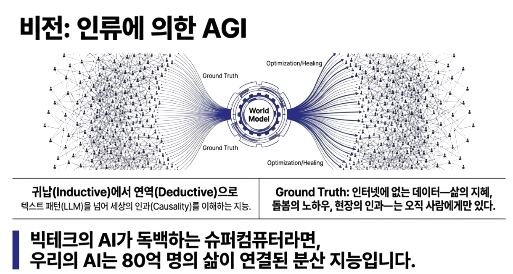
진정한 월드모델은 이 삶들이 연결될 때 비로소 완성된다. 80억 명의 시민은 단순한 데이터 제공자가 아니다. 그들은 세계 곳곳에 분산된 검증자이자 교사다. 인공지능이 세운 가설이 실제 환경에서 작동하는지 확인하고, 기계가 놓친 조건을 보완할 수 있는 유일한 존재다. 우리가 만드는 AGI는 단일한 슈퍼컴퓨터의 독백이 아니다. 그것은 중앙이 아닌 삶의 현장에서 학습되는 분산 지능, 지혜의 연합체다. 80억 명이 참여했기에 편향되지 않고, 80억 명의 조건을 담았기에 보편적이다. 이것이 우리가 말하는 인류에 의한 AGI다.
이렇게 설계된 AGI는 자연스럽게 인류의 약한 고리를 향한다. 의료가 닿지 않는 곳, 교육이 끊긴 지역, 돌봄이 사라진 공동체, 기후 위기로 무너지는 생활 기반. 이 결핍들은 추상적 문제가 아니라, 월드모델이 다뤄야 할 구체적인 상태값이다. AGI는 이 상태들을 감지하고, 가장 적은 자원으로 가장 큰 회복을 만드는 경로를 탐색한다. 여기서 인공지능은 지배의 도구가 아니라, 가장 효율적인 치유의 인프라가 된다.
이 구조는 동시에 명확한 비즈니스적 완결성을 가진다. 오픈월드가 가동되면 약한 고리는 곧 시장이 된다. 한국인공지능협회의 회원사들은 이 시장의 주체다. 그들은 중국발 오픈웨이트 모델을 복제하는 경쟁을 반복하지 않는다. 대신 과학기술, 의료, 교육, 에너지, 도시, 돌봄, 환경이라는 구체적 영역에서 결핍을 메우는 솔루션을 제안한다. AGI는 이 솔루션들을 연결하고, 실제 효과를 검증한다. 회원사는 기술을 제공하고, 오픈월드는 검증된 수요와 신뢰를 제공하며, 사회는 회복을 얻는다. 이것은 치유를 통해 성장하는 시장 구조다. 성능이 아니라 문제 해결의 결과가 경쟁력이 되는 시장이다.
데이터의 흐름 역시 달라진다. 오픈월드에서 데이터는 수탈의 대상이 아니다. 개인과 공동체가 제공한 경험은 AGI가 세계를 이해하는 핵심 자산이 되고, 그 지능은 다시 더 나은 서비스와 보편적 기본 자산으로 순환된다. 내가 기여했기에 시스템이 성장하고, 시스템이 성장했기에 나의 삶이 안정된다. 이것이 합리적인 피드백 루프다. 여기서 인간은 시스템의 부속품이 아니라, 문명 엔진의 공동 설계자이자 주주다.
이 모든 구조의 중심에는 시민이 있다. 오픈월드의 시민은 인공지능으로 증강된 강한 개인, 체인저다. 그는 근로소득으로만 정의되지 않는다. 학습과 돌봄, 창작과 문제 해결까지 자신의 시간을 문명에 기여하는 가치로 정렬한다. AGI는 이 기여들을 인식하고, 안내하고, 다시 사회로 순환시키는 계산 장치다.
“깨달음은 시스템이 될 수 있는가”라는 질문은 여기서 답을 얻는다. 80억 인류의 깨달음이 연결되어 반복 가능하고 측정 가능한 구조가 되는 순간, 그것은 개인의 선행을 넘어 문명의 시스템이 된다.
그래서 이 비전은 실행 목표다. 한국인공지능협회는 인과적 월드모델 기반의 AGI를 구축해 오픈월드의 신경망으로 가동하려 한다. 그 위에서 회원사들이 참여하는 치유의 시장을 열고, 시민들이 체인저로 성장하는 구조를 달성하려 한다.
우리가 말하는 Artificial General Intelligence는, 지능이 보편성을 얻는 기술적 성취를 넘어 개인과 사회의 보편성을 끌어올리는 지능이다.
08
Chapter Eight
핵심전략, 네 개의 기둥
문명은 방향만으로 존속하지 않는다. 아무리 올바른 비전이라도 그것을 떠받치는 구조가 없으면 선언으로 흩어진다. 우리는 이미 보았다. 침묵 속에서 진행된 전쟁이 어떻게 기존 질서를 무너뜨렸는지, 점령군이 어떻게 빈 공간을 채우는지, 그리고 오래된 사상이라는 언어가 왜 더 이상 답이 되지 못하는지를.
이제 질문은 하나로 수렴한다. 무너진 자리에 무엇을 세울 것인가.
오픈월드는 관념이 아니다. 그것은 실제로 작동해야 하는 문명의 운영 체계다. 운영 체계라면 반드시 현실의 대지 위에 박혀 흔들리지 않을 구조가 필요하다. 우리는 지난 10년간 정보와 인재, 기업과 시장이라는 이름으로 생태계를 일궈왔다. 그러나 다가오는 전환의 규모 앞에서 생태계만으로는 충분하지 않다. 이제는 문명을 떠받칠 인프라가 필요하다.
오픈월드가 운영 체계(OS)라면, 그것이 현실로 작동하기 위한 마지막 조건은 ‘배포(Deployment)’다. 기준이 계산되고 정렬되더라도, 그것이 80억 인류의 일상에 닿지 못하면 문명은 다시 점령당한다. 그래서 우리는 오픈월드를 하나의 서비스 파이프라인으로 구현하려 한다. 시민이 자신의 삶에서 마주한 문제를 정의하고, 해결책을 제안하며, 그 결과가 검증되고, 보상과 참여로 순환되는 경로. 이 배포 경로가 없는 오픈월드는 선언에 불과하다. 배포가 가능한 순간, 오픈월드는 비로소 문명이 된다.
그래서 우리는 OS를 배포하기 위해 네 개의 기둥을 세운다. 이것은 사업 영역의 나열이 아니다. 한국인공지능협회의 이름으로, 서로 다른 역할과 책임을 지닌 자회사와 조직들이 실제로 구축해 나갈 실행 구조다. 이 기둥들은 오픈월드를 향한 경로이자, ‘프로토콜 스택’이다.
프로토콜 스택은 상징이 아니다. 운영체계를 받침하기 위한 분업된 실행 구조다.
첫째,
신분의 혁명과 회원의 확장 — DID (Decentralized Identity)
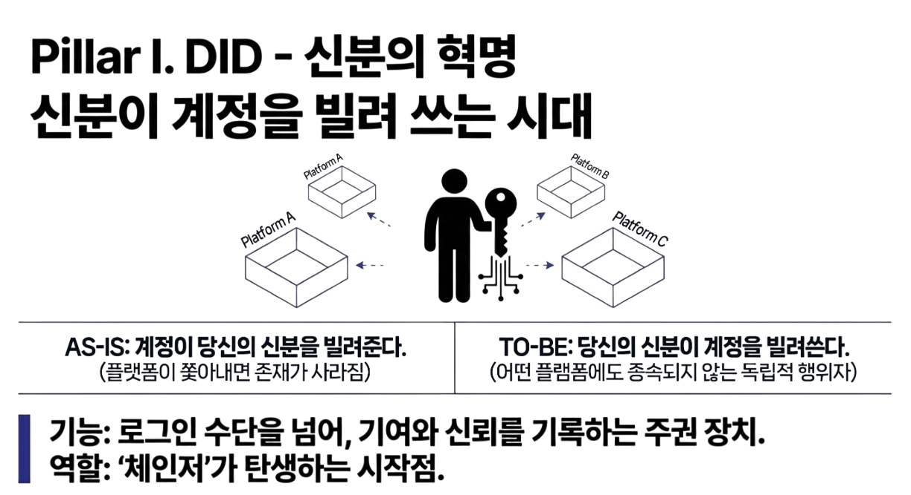
점령의 시대는 총이 아니라 ‘신분’으로 시작된다. 계정이 존재를 승인하고 취소하는 세계에서 인간은 시민이 아니라 사용자였다. 그리고 사용자는 약관 한 줄로 추방된다. 이때 주권은 투표함이 아니라 로그인 화면에서 박탈된다.
그래서 첫 번째 기둥은 신분의 혁명이다. 우리의 DID는 단순한 인증 기술이 아니다. 이것은 “계정이 신분을 빌려주는 시대”를 끝내고, “신분이 계정을 빌려 쓰는 시대”로 넘어가는 전환이다. 개인이 자신의 이력과 기여, 책임을 스스로 소유하고, 어느 플랫폼에도 종속되지 않도록 만드는 최소한의 주권 장치다.
이 신분 위에서 회원은 더 이상 수동적인 가입자가 아니다. 그는 검증 가능한 행위자가 된다. 협회는 DID로 회원을 연결하고, 기여를 기록하며, 신뢰를 축적한다. 흩어진 개인들이 하나의 세력으로 규합되는 방식이다. 강한 개인, 체인저(Changer)는 여기서 태어난다. DID는 사람을 모으는 기술이 아니라, 사람을 주체로 세우는 기둥이다.
둘째,
차기 AI 패러다임— World Model (Causal Reasoning Engine)
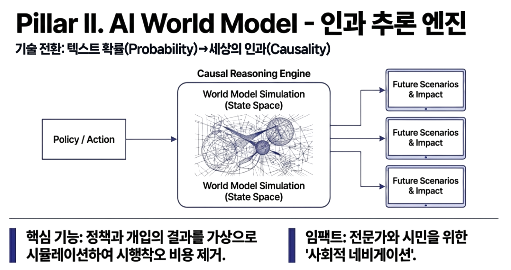
비전은 기술로 증명되어야 한다. 우리가 선포한 ‘인류에 의한 AGI’는 단순한 이상이 아니다. 이 목표에 도달하기 위해서는 현재의 기술적 한계를 돌파할 실질적인 엔진이 필요하다. 남들이 만들어 놓은 모델을 API로 연결하는 수준으로는, 문명의 복잡한 인과를 다루는 운영 체계를 감당할 수 없다.
그래서 우리는 인공지능의 차기 패러다임을 여는 핵심 아키텍처로 월드모델(World Model)을 제안하며, 이 기술적 난제를 푸는 선행 연구를 우리가 직접 수행한다.
월드모델은 “말을 잘하는 지능”이 아니다. 세상이 어떻게 움직이는지를 구조적으로 학습하고, 무엇을 바꾸면 어떤 결과가 생기는지를 계산하는 엔진이다. 즉, 언어의 확률을 넘어 인과(Causality)와 개입(Intervention)을 다루는 추론·시뮬레이션 계층이다.
현재의 거대언어모델(LLM)은 스케일링 법칙을 통해 놀라운 일반화 능력을 보여주었다. 그러나 그것은 방대한 데이터를 쏟아부어 패턴을 찾아내는 귀납적(Inductive) 방식이다. 태산을 쌓아 티끌 같은 진리를 발견하는 방식이며, 현실의 복잡한 정책과 행동이 얽힌 문제에서는 설명 가능성과 검증 가능성에 한계를 드러낸다.
우리는 언어모델이 가진 유창함 위에, 세상의 작동 원리를 계산하는 연역적(Deductive) 시뮬레이션 능력을 공학적으로 결합하는 기술 리더십을 목표한다. 이것은 오픈월드라는 생태계가 작동하기 위해 반드시 필요한 심장이다. 언어의 그럴듯함이 아니라 결과의 인과성을 책임질 수 있는 계산 구조가 있어야만, 비로소 기술은 문명의 기준이 될 수 있기 때문이다.
오픈월드의 월드모델은 인간을 증강 시키는 모델이다. 인간에게 개입권과 예측력을 돌려주는 엔진이다. 정책과 선택이 만들어낼 결과를 상태공간(State Space)에서 가상 실행해 보고, 비용과 편익, 부작용과 반사실(Counterfactual)적 대안 경로를 비교해 준다. 그 결과 참여의 리스크는 낮아지고, 행동의 문턱은 내려간다.
시민이 정책을 제안할 때 파급효과를 미리 검증하고, 전문가가 문제를 해결할 때 숨겨진 인과 경로를 탐색한다. 의료·교육·환경·도시·돌봄의 현장에 장착된 월드모델은 개인의 직관을 검증 가능한 가설로 바꾸고, 의도를 측정 가능한 결과로 연결한다. 참여는 단순한 의견이 아니라, 시뮬레이션과 선택을 거쳐 실제 변화를 만드는 실행의 과정이 된다.
월드모델은 우리가 직접 설계하고 생태계와 공유할 핵심 엔진이자, 사회가 다음 단계로 진화하기 위한 필수적인 기술 돌파구다.
셋째,
에너지의 전환과 인프라의 균형 — AIDCG (AI Data Center Grid)
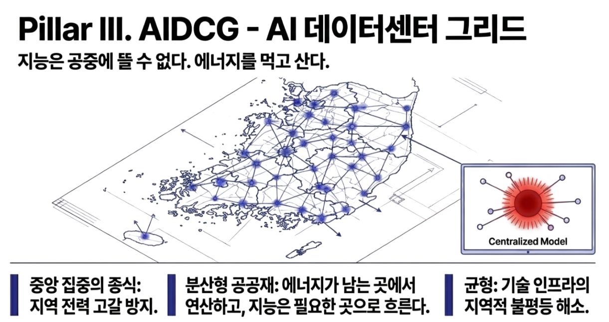
그러나 지능은 공중에 뜰 수 없다. 모든 계산은 에너지를 요구한다. 그리고 에너지는 곧 권력이다. 지금의 중앙 집중식 데이터센터 모델은 전력망을 압박하고, 지역을 희생시키며, 계산 능력을 독점의 무기로 만든다. 점령군이 군복 대신 서버를 입는 이유가 여기에 있다.
그래서 세 번째 기둥은 인프라의 균형이다. AIDCG는 거대한 단일 센터를 짓는 전략이 아니다. 그것은 ‘연산을 한 곳에 모으는 방식’을 끝내고, ‘연산을 공공재처럼 분산시키는 방식’으로 넘어가는 전환이다. 에너지가 남는 곳에서 연산하고, 지능은 필요한 곳으로 이동한다. 특정 지역에 부담을 집중시키지 않고, 재생에너지와 지역 분산을 통해 지속 가능한 방식으로 문명을 떠받친다.
이 인프라는 누구도 배제하지 않고, 어느 지역도 소외시키지 않는다. AIDCG는 오픈월드가 멈추지 않고 작동하게 만드는 물리적 심장이자, 에너지와 기술의 불균형을 완화하는 현실적인 해법이다.
넷째,
가치의 순환과 보상의 합리성 — Data Trust (Universal Basic Capital)
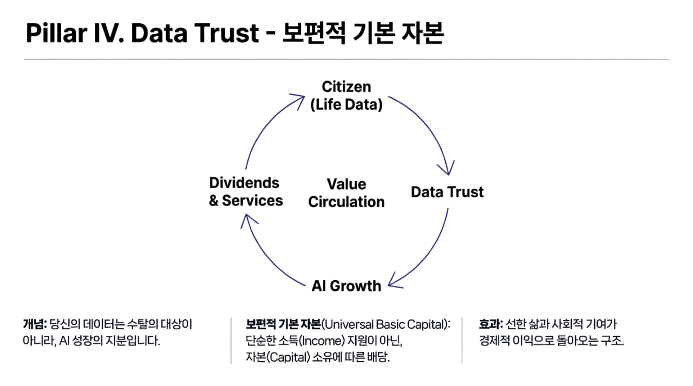
마지막 기둥은 이 모든 활동을 지속 가능하게 만드는 경제적 혈관이다. 문명은 당위만으로 움직이지 않는다. 합리적인 보상이 흐르지 않으면 참여는 멈춘다. 지금까지 데이터는 채굴되었고, 개인의 기여는 휘발되었다. 우리는 ‘기여’가 아니라 ‘노출’이 돈이 되는 시대를 살아왔다.
오픈월드는 이 흐름을 되돌린다. 데이터 신탁(Data Trust)은 개인의 경험과 지식을 자산으로 전환하는 구조다. 데이터는 수탈의 원료가 아니라, 성장의 지분이 된다. 시민이 제공한 경험은 AGI가 세계를 이해하는 핵심 자원이 되고, 그 성장의 결과는 다시 개인과 공동체로 돌아온다. 보편적 기본 자산이라는 형태로 안정이 돌아온다.
선한 삶이 손해가 되지 않고, 사회적 참여가 곧 경제적 안정으로 이어지는 구조. Data Trust는 개인의 이익과 공공의 선이 충돌하지 않도록 정렬한다. 이 순환이 완성될 때, 오픈월드는 외부의 강제 없이도 스스로 유지되는 생명력을 갖게 된다.
09
Chapter Nine
자본
여기까지 오면 독자의 머릿속에는 거의 같은 질문이 남는다.
“그래서, 이걸 움직일 돈은 어디서 오나.”
그 질문은 당연하다. 오픈월드는 관념이 아니라 인프라다. 신분의 체계는 배포되어야 하고, 지능의 체계는 연산을 필요로 하며, 연산은 에너지와 인프라를 요구한다. 분배와 순환은 제도와 계약, 회계의 언어로 구현되어야 한다. 결국 이 모든 것은 현실의 대지 위에 박히는 구조이고, 그 구조는 언제나 자본의 형태로 세계에 놓인다.
자본은 무엇인가. 자본은 숫자가 아니다. 자본은 미래를 현재로 끌어오는 기술이다. 시간이 가져올 가치를 앞당겨 쓰기 위해 위험을 계산하고, 대가를 가격으로 붙이며, 투입과 회수의 경로를 설계하는 장치. 자본주의의 핵심은 돈이 아니라 시간과 위험을 다루는 방식에 있다.
그래서 자본은 증폭기다. 어떤 구조에 붙느냐에 따라 결과를 크게 만든다. 방치된 구조에 붙으면 약탈이 되고, 설계된 구조에 붙으면 인프라가 된다. 이 차이를 가르는 것은 의도가 아니라 보상과 책임의 설계다. 무엇을 장려하고, 무엇을 금지하며, 어떤 위험을 누가 떠안는가. 자본은 그 규칙을 따라 움직인다.
자본이 가장 두려워하는 것은 시장의 붕괴다. 다수가 구매력을 잃으면 수요가 꺼지고, 수요가 꺼지면 성장의 흐름이 끊기며, 레버리지는 부채가 되고, 부채는 시스템 리스크가 된다. 그때 자본은 선의를 찾지 않는다. 자본은 생존을 찾는다. 지속 가능한 질서를.
그래서 어느 순간 자본은 스스로 표준을 만들기도 한다. 환경과 사회, 지배구조 같은 언어가 갑자기 ‘투자 기준’이 된 것은 기업이 갑자기 도덕군자가 되어서가 아니다. 기후가 무너지면 공급망이 무너지고, 공급망이 무너지면 가격 체계가 무너지고, 가격 체계가 무너지면 시장이 붕괴한다는 계산이 작동했기 때문이다. 표준은 이상이 아니라 생존의 도구가 된다. 자본은 도덕을 채택한 것이 아니라 리스크를 가격에 반영하기 시작한 것이다.
인공지능 시대에는 이 계산이 더 직접적으로 돌아온다. 기계가 노동을 대체하는 속도가 사회의 재정렬 속도를 앞지르면, 다수는 소득을 잃고 구매력을 잃는다. 구매력이 붕괴한 시장에서 기술은 성장 엔진이 아니라 과잉이 된다. 인간이 빠진 경제에서 인공지능은 더 이상 ‘혁신’이 아니라 고급 장난감이 된다. 가장 뛰어난 모델을 만들었다 해도, 그 모델이 팔 물건과 서비스가 사라진다면 자본의 회수는 불가능해진다.
이 지점에서 질문은 거꾸로 자본을 향한다. 대다수의 인류가 구매력을 잃고 빈민으로 전락한 세상에서, 그 뛰어난 인공지능은 누구에게 무엇을 팔 것인가. 그리고 무엇보다, 그 지능이 유지될 전력과 연산 비용을 어떤 시장이 떠받칠 것인가.
여기서 오픈월드는 윤리의 언어로 자본을 설득하지 않는다. 오픈월드는 시장의 언어로 자본을 설득한다. 소수의 엘리트만이 탑승한 방주 안의 시장은 좁고, 고여 있으며, 곧 한계에 봉착한다. 반면 다수가 체인저로서 소득의 다양성을 확보하고, 데이터의 주권을 갖고, 정당한 보상을 받으며, 경제적 지위가 향상되는 세상은 자본 입장에서 80억 개의 새로운 파이프라인이 열리는 것과 같다. 다수가 풍요로워져야 자본은 계속 회전한다. 이 명제는 도덕이 아니라 구조다.
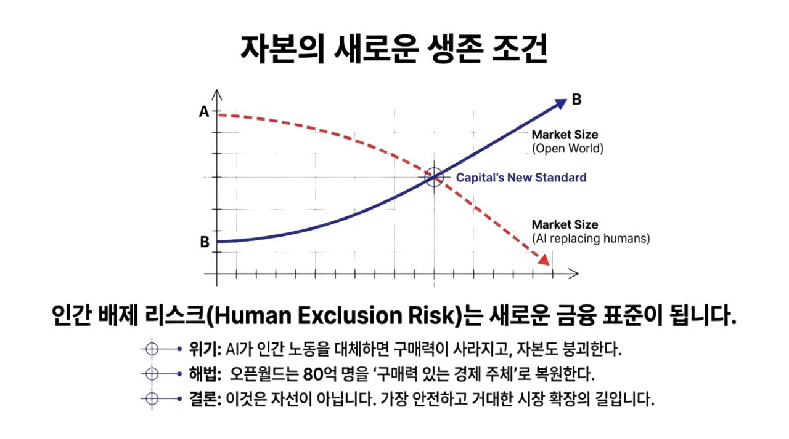
오픈월드가 제안하는 것은 ‘자선’이 아닌 ‘확장’이다. 인류를 구제 대상으로 다루는 순간, 시장은 비용이 된다. 그러나 인류를 소비 주체이자 성장의 파트너로 격상시키는 순간, 시장은 다시 한번 새로운 경제학을 쓸 수 있는 기반이 된다. 오픈월드는 80억을 단순한 숫자로 호출하지 않는다. 80억을 경제와 정치의 실체로 복원한다. 구매력과 참여권, 학습과 돌봄, 창작과 문제 해결이 가치로 측정되고 순환되는 구조. 그 구조는 소비를 ‘지출’이 아니라 ‘순환’으로 바꾸고, 이익은 ‘수탈’이 아니라 ‘배당’으로 바뀐다.
여기서 자본은 단순히 돈을 대는 존재가 아니라, 문명의 구조에 편입된다. DID는 신뢰의 주체를 세우고, 신뢰가 축적될 수 있는 인생의 궤적을 만든다. AGI는 판단과 개입의 비용을 낮추어, 참여를 감정이 아니라 실행으로 바꾼다. AIDCG는 에너지와 연산을 일부의 독점 자산이 아니라 지속 가능한 기반으로 재정렬한다. Data Trust는 경험과 가치를 수탈이 아니라 배당과 안정으로 연결한다.
자본은 더 성숙할 수 있으며 현재의 자본주의를 더 넘어갈 수 있다. 단기 수익을 위해 리스크를 외부화하던 방식에서, 장기 지속을 위해 리스크를 내부화하는 방식으로. 불평등을 ‘관리 비용’으로 남겨두는 방식에서, 불평등을 ‘시장 붕괴 리스크’로 정확히 인식하고 구조를 바꾸는 방식으로. 기후 리스크가 자본의 논리로 산업의 표준이 되었듯, 이제는 인간 배제 리스크가 자본의 논리로 번역되어 표준이 된다. 사람을 배제한 AI는 거품이지만, 사람과 결합한 AI는 시장이다.
자본은 세계를 바꾸는 힘이 아니라, 세계가 나아갈 경로를 선택하는 힘이다. 어떤 세계가 더 오래 지속될지, 어떤 세계가 더 큰 시장을 만들지. 그 선택이 바뀌는 순간, 자본은 악이 아니라 문명을 떠받치는 에너지로 다시 정의된다. 오픈월드는 바로 그 선택을 가능한 한 논리적으로, 가능한 한 계산 가능한 형태로 제시하는 운영 표준이다.
10
Chapter Ten
The First Changer
모든 시스템에는 최초의 입력값이 필요하다. 아무리 정교한 설계도라도, 누군가 그 위에 첫 발자국을 찍지 않으면 그것은 개념으로 남는다. 역사는 언제나 먼저 걷는 한 사람의 등 뒤에서 시작된다.
나는 오늘, 그 첫 번째 발자국을 찍기로 마음먹었던 날을 다시 떠올린다. 2016년 11월, 춥지만 이상하게 설렜던 겨울이었다. 나는 무일푼이었고, 인공지능이 세상을 어디까지 바꿀지 정확히 알지도 못했다. 다만 분명히 느끼고 있었다. 기술이라는 파도가 이미 밀려오고 있으며, 우리가 정신을 차리지 않으면 그 파도는 우리를 주체가 아닌 객체로, 시민이 아닌 사용자로 전락시킬 것이라는 사실을.
그래서 우리는 서툰 손으로 협회의 설립문을 썼다.
지금 다시 읽어보면, 그 문장은 투박하다. 정교한 이론도, 완성된 모델도 없다. 그러나 놀랍게도 그 안에는 우리가 지난
10년 동안 부딪히고, 흔들리고, 다시 일어서며 하나씩 구체화해온 오픈월드의 모든 씨앗이 이미 들어 있었다.
우리는 그때 “시대와 호흡하고 함께 발맞춰가는 자율적 형태”를 꿈꾸었고, “기술적 상승은 반드시 인간을 향해야 한다”고 믿었으며, 무엇보다 “우리와 관계하는 모든 이들을 시대의 주인으로 세우겠다”고 다짐했다.
이 문장들은 예언이 아니었다. 그것은 나 자신에게 내린 명령이었다. '손님이 아니라 주인으로 살 것인가.' '시스템에 얹혀가는 사용자에 머물 것인가, 아니면 기준을 세우는 설계자로 나설 것인가.'
나는 지난 10년간 이 질문을 몸으로 통과해왔다. 아무도 보지 않는 자리에서, 이름만 큰 조직의 무게를 감당하며, 아직 존재하지 않는 구조를 있다고 믿는 사람처럼 살아왔다. 그 시간은 철저히 고독했다. 그러나 그 고독 속에서 하나는 분명해졌다. 내가 먼저 체인저가 되지 않고서는, 누구도 초대할 수 없다는 사실이었다.
그래서 나는 ‘첫 번째 체인저’가 되기로 했다. 완성된 답을 가진 사람이 아니라, 미완의 질문을 안고도 도망치지 않는 사람으로. 구조를 기다리지 않고, 구조를 설계하는 사람으로.
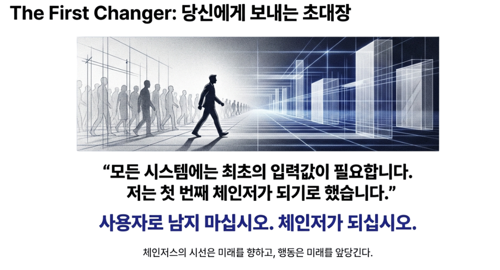
이 글은 나의 회고록이 아니다. 이것은 당신에게 보내는 신호다. 내가 찍은 첫 발자국은 목적지가 아니라, 당신이 걸어올 길의 입구일 뿐이다.
11
Chapter Eleven
체인저스, 시선은 미래를 향하고 행동은 미래를 앞당긴다
한국인공지능협회의 슬로건은 “시선은 미래를 향하고 행동은 미래를 앞당긴다”이다. 이 문장은 언제나 조용히 존재해왔다. 대외 홍보의 전면에 나서지도 않았고, 거창한 구호로 반복되지도 않았다. 내 명함 뒷면에, 공식 문서의 귀퉁이에, 홈페이지 한쪽 구석에 적혀 있던 작은 문장. 그러나 이 문장의 힘은 강력했다.
미래를 앞당기는 행동은 고난이다. 결과가 나오기 전까지는 이해받지 못하고, 실패의 비용은 오롯이 먼저 치러야 하기 때문이다. 그 문장은 밤마다 나에게 이렇게 묻는 것 같았다. “지금 너의 선택이 정말 미래를, 그 오픈월드를 조금이라도 앞당기고 있는가.”
나는 기존의 슬로건에 하나의 단어를 덧붙인다. 체인저스(Changers). 이 문장은 혼자 지키는 신념이 아니라, 함께 불러야 할 이름이다. 앞선 글에서 나는 ‘첫 번째 체인저’를 자처했지만, 체인저는 혼자 완성될 수 없다. 시선을 미래에 두되, 오늘의 행동으로 그 미래를 끌어오는 사람들. 불확실한 길을 기꺼이 선택한 사람들의 집합. 체인저스는 반드시 복수형이어야 한다.
한국인공지능협회는 결국 그들, 당신들을 기다리는 자리였다는 것을 이제야 말할 수 있게 되었다.
이 시리즈를 쓰기까지 나는 오래 망설였다. 이야기를 풀어내기엔 아직 부족한 점이 많았고, 설명해야 할 맥락은 너무 넓었다. 무엇보다 이 10년을 함께 버텨준 동료들에게, 이 시간을 어떻게 정의해야 할지 쉽게 결정할 수 없었다.
솔직히 고백하건대, 협회는 좋은 직장이 아니었다. 불확실했고, 늘 경계에 있었으며, 보상은 늦었다. 방향은 있었지만 길은 없었고, 계획은 있었지만 자원은 부족했다. 그 어설픔 속에서 함께 기다려준 동료들, 묻지 않고 버텨준 사람들, 때로는 아무 말 없이 곁을 지켜준 이들에게 나는 늘 빚진 마음이었다.
그럼에도 불구하고 우리가 여기까지 올 수 있었던 이유는 단 하나다. 우리는 초심을 지켰다. 미래를 말하면서 오늘을 등한시 하지 않았고, 기술을 말하면서 사람을 지우지 않았으며, 성공을 약속하면서 책임을 회피하지 않았다. 그 진심 하나로, 우리는 춥고 긴 시간을 견뎠다.
이 글을 작업하는 시간은 오래 정리하지 못했던 생각들을 제자리에 놓는 과정이었다. 그리고 다음 10년을 계획하면서 이 글의 제목이 “Ten years later and beyond”가 되었다. 앞으로의 10년, 그 너머로 나아가기 위해서다.
지금 나는 오픈월드(Open World)라는 세계관과 체계를 하나의 책으로 정리하고 있다. 이 글에서 흘려보낸 질문들. 그것을 더 정밀하게, 더 차분하게, 더 많은 사람들과 나눌 수 있는 언어로 옮기고 있다. 이 책은 단순한 사상서가 아니다. 우리 문명이 오픈월드로 진입하기 위한 설명서이자 제안서이며, 동시에 당신에게 보내는 가장 정중한 초대장이 될 것이다.
그리고 나는 그 책을 들고, 인류를 향해 걷는 체인저가 되려 한다. 누군가를 이끄는 리더라기보다, 먼저 건너본 사람으로서. 완성된 답을 가진 사람이라기보다, 함께 질문을 이어갈 동료로서.
이 시리즈의 마지막에 나는 다시 처음으로 돌아간다. 모든 것이 서툴렀지만 순정했던 2016년 12월의 설립문으로. 이 문장은 고치지 않는다. 왜냐하면 이 문장은 우리가 어디에서 출발했는지를, 그리고 결국 어디로 가야 하는지를 가장 정직하게 보여주는 나침반이기 때문이다.
2016년 협회 설립문 원문
협회는 2012년부터 스타트업 커뮤니티 활동을 해온 것이 모태이며, 4차산업혁명을 우리가 선택한 미래로 만들고자 하는 뜻 있는 젊은이들이 시작했습니다. 우리 역시 “더 나은 세상을 만든다.”라는 스타트업 정신으로 협회를 운영합니다.
우리는 시대와 호흡하고 함께 발맞춰가는 자율적 형태를 지향합니다. 협회의 구성원은 인공지능 전문가뿐만 아니라 인간과 시대에 대해서 관심 있는 모든 이들에게 열려 있습니다. 앞으로의 세상은 기술을 넘어서 집단지성으로부터 비롯한 데이터의 활용과 사회의 의식적 성숙도에 따른 융복합 활용도와 관련이 크기 때문입니다.
우리는 인공지능으로 벽을 만들지 않습니다. 단지 인공지능이라는 주제로 세상과 즐겁게 소통할 뿐입니다. 그런 의미에서 우리는 각기 다르지만 각자의 영역에서 열심히 살아가며 4차산업혁명으로 인간의 존엄을 실현하자는 하나의 큰 뜻을 공유하는 평범한 시민들입니다.
우리는 기술적 상승은 반드시 인간을 향해야 한다고 믿으며 기술을 통해서 사회적 모순에 대한 해결 의지가 강하며, 크게 고민하고 과감하게 해결하려 합니다. 그래서 협회는 일반 시민, 스타트업, 그리고 기관단체들의 협력과 연대를 추구합니다.
우리는 우리와 관계하는 모든 이들을 시대의 주인으로 세울 것입니다. 변화하는 세상에 얹혀 사는 손님이 아니라 적극적으로 시대를 창의하는 주인의 포지션이 우리의 정체성입니다. 우리는 새로운 문명의 기준을 설계하는 게임 체인저입니다.
12
맺음말
에필로그: Why Korea, Why us?
“왜 한국인가? 그리고 왜 한국인공지능협회인가?”
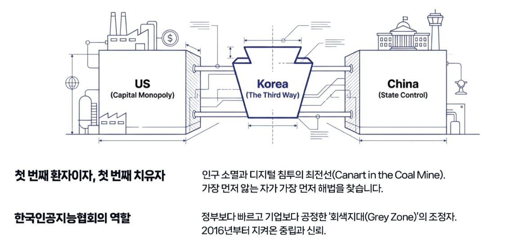
인류 문명의 운영 체계를 바꾸겠다는 거대한 비전을, 왜 실리콘밸리의 빅테크도 아니고 UN 같은 국제기구도 아닌, 한국의 한 민간 협회가 말하는가. 이 질문에 답하지 못한다면 앞선 모든 논의는 허공에 흩어진다. 여기서 이 깃발을 들 수밖에 없는 세 가지 이유를 정리한다.
첫째,
한국은 인류가 처한 위기의 ‘첫 번째 환자’이자 ‘가장 빠른 실험실’이기 때문이다.
대한민국은 전 세계에서 인구 소멸, 초고령화, 수도권 집중, 디지털 침투가 가장 극단적으로 진행되는 나라다. 인공지능이 노동을 대체할 때 벌어질 사회적 충격과 생산인구 감소로 인한 국가 시스템의 압력을, 지구상에서 가장 먼저 감당해야 하는 당사자다.
그렇다고 이것을 미루기엔 우리에겐 시간이 없다. 5년 뒤인 2030년부터는 잠재 성장률이 0%에 수렴할 것이다. 다른 나라들이 AI를 ‘산업의 도구’로 다룰 때, 우리는 AI를 ‘생존의 도구’로 다룰 수밖에 없다. 하여 가장 절박한 자가 가장 먼저 해법을 찾는다.
둘째,
세계는 미국과 중국이 아닌 ‘제3의 표준’을 갈망하기 때문이다.
지금 AI 패권은 두 갈래로 나뉜다. 자본을 앞세워 이익을 독점하는 미국의 빅테크 모델, 그리고 국가가 데이터를 통제하는 중국의 모델. 대다수의 국가는 이 양자택일 앞에서 주권을 잃고 디지털 식민지가 될 공포를 느낀다.
한국은 자본으로 미국을 이길 수 없고, 통제로 중국을 따라갈 수 없다. 그래서 우리는 필연적으로 제3의 길을 찾아야 한다. 시민의 참여와 데이터 주권을 보장하면서도, 민간의 역동성과 혁신을 살리는 표준. 오픈월드는 바로 그 방향의 이름이다.
그리고 한국이 이 깃발을 들 수 있는 이유는 단지 ‘중간 국가’여서가 아니다. 한국은 세계사에서 드물게, 식민지에서 출발해 전쟁의 폐허를 지나 산업화·민주화·정보화를 한 세대 안에 통과하며 선진국에 도달한 나라다. 이 압축성장은 단순한 경제 성장의 서사가 아니라, 사회 전체가 고밀도의 전환을 견디며 제도와 시장의 규칙을 반복적으로 갱신해온 경험이다.
인공지능이 가져오는 변화의 본질도 결국 ‘시간의 압축’이다. 몇십 년에 걸쳐 진행되던 산업 전환과 직업 재편이 몇 년 단위로 밀려오고, 사회는 그 속도를 따라잡지 못하면 균열이 난다. 한국은 그 압축을 가장 먼저, 가장 강하게 맞이할 조건 위에 서 있다.
그래서 한국은 AI 시대의 ‘가장 빠른 실험실’이면서 동시에, 이 속도를 흡수해 표준으로 바꿔낼 수 있는 거의 유일한 공간이 된다. 우리가 이 깃발을 들 때, 각자도생식 블록화를 거부하는 전 세계의 국가와 시민들이 연결될 명분이 생긴다. 이것은 한국의 생존 전략이자, 세계를 위한 대안이다.
셋째,
‘협회’만이 수행할 수 있는 고유한 역할이 있기 때문이다.
왜 기업이 아닌가. 기업은 주주의 이익을 최우선으로 삼기에 공공의 신뢰를 지속적으로 축적하기 어렵다. 왜 정부가 아닌가. 정부는 규제와 행정, 국경의 제약 속에서 초국경 표준을 속도감 있게 확산시키기 어렵다.
협회는 이익을 독점하지 않기에 개인과 기업들을 모을 수 있고, 민간의 속도를 가지면서도 공공의 가치를 지향할 수 있다. 이해관계를 조정하고, 기술과 시민을 연결하며, 새로운 문명의 프로토콜을 제안하고 검증할 수 있는 형식. 그것이 지난 10년 동안 한국인공지능협회가 증명해온 정체성이다.
"한국은 이유고 협회는 방식이다.
먼저 시대를 겪는 자의 책임이다."
Q&A
부록
Q&A
Q1. "제3차 세계대전이라니, 지나친 공포 조장 아닙니까?"
A. 이 표현의 목적은 시대 변화의 정확한 ‘진단명’을 찾기 위해서입니다.
의사가 병명을 정확히 알아야 처방을 내릴 수 있듯, 시대의 본질을 알아야 생존 전략이 나옵니다. 지금의 변화를 단순한 ‘경기 불황’이나 ‘기술 트렌드’로 본다면, 우리는 코딩을 배우거나 허리띠를 졸라매는 수준의 대응밖에 할 수 없습니다.
그러나 화폐, 국경, 노동이라는 문명의 기둥이 무너진 현상을 ‘시스템이 붕괴하고 재편되는 전쟁’으로 규정한다면 이야기가 달라집니다. 우리는 무방비 상태로 휩쓸리지 않기 위해, 이 상황을 가장 적나라한 단어인 ‘전쟁’이라 명명하고, ‘오픈월드’라는 응전 태세를 갖추자는 것입니다.
Q2. "기존 질서를 '망령'이라 부르고 '분배'를 말합니다. 사회주의나 특정 이념을 설파하는 것 아닙니까?"
A. 이것은 새로운 정치적 변화까지 다루는 시스템 설계도입니다.
우리는 좌파나 우파의 낡은 이념을 ‘망령’이라 부르고 배격합니다. 인공지능이 생산의 주체가 되는 시대에, 과거의 이념 논쟁은 더 이상 작동하지 않기 때문입니다.
우리가 제안하는 것은 이념이 아니라 ‘공학적 엔지니어링’입니다. 생산성이 폭발해도 소비할 사람이 없다면 시장은 붕괴합니다. 이를 막기 위해 당신의 데이터 기여를 ‘자산’으로 인정하고, 정당한 몫을 배당(Dividend)하여 경제 생태계를 순환시키자는 것입니다. 이것은 부자 징벌적 재분배가 아니라, 시장을 지속 가능하게 만드는 가장 합리적인 자본주의적 해법입니다.
Q3. "빅테크는 수백조 원을 씁니다. 자본과 인프라가 절대적으로 부족한 우리가 '인류에 의한 AGI'를 만든다는 게 현실적으로 가능합니까?"
A. 우리는 ‘비대칭 전력’으로 승부합니다. 우리에겐 개인과 사회와 접점을 가질 ‘결정적 매개체’가 있습니다.
그들의 방식대로 더 큰 데이터센터를 짓고 텍스트를 긁어모으는 ‘스케일 경쟁’을 한다면 우리는 필패할 것입니다. 하지만 우리는 전장의 판도를 바꿀 전혀 다른 무기를 준비하고 있습니다.
우리는 조만간 오픈월드에 접속할 수 있는 구체적인 핵심 아이템을 배포할 것입니다. 이것은 80억 인류의 개인과 가가호호(家家戶戶)마다 놓이게 될 문명의 접점입니다. 아직 보안 사항이지만, 이 아이템이 배포되는 순간 우리는 빅테크가 ‘검색’으로는 결코 얻을 수 없는, 삶의 현장에서 발생하는 실시간 문제 해결의 맥락(Ground Truth)을 확보하게 됩니다. 이것이 자본의 열세를 뒤집을 우리의 비기(秘技)이자 확실한 승산입니다.
Q4. "그 막대한 인프라 비용은 누가 댑니까? 자본가들이 왜 여기에 투자합니까?"
A. 오픈월드는 자본의 ‘더 나은 성장을’을 제시합니다.
블랙록이 왜 기후 위기 때 ESG를 투자의 표준으로 강제했을까요? 기후가 망가지면 자본도 증발하기 때문입니다. 지금 자본은 ‘인간 배제 리스크’ 앞에 서 있습니다. 1%의 엘리트만 남은 세상에서는 그 어떤 AI 기업도 수익을 낼 수 없습니다.
오픈월드는 80억 인류를 소비 주체이자 데이터 파트너로 격상시켜, 자본에게 ‘더 큰 새로운 시장’을 열어줍니다. 우리는 자본에게 호소하는 것이 아닙니다. “이 기준을 따르지 않으면 당신들의 자산은 거품이 될 것”이라고 경고하고, 가장 안전한 투자처를 제공하는 것입니다. 오픈월드는 AI 시대의 새로운 ESG 표준입니다.
Q5. "협회가 또 다른 '빅 브라더'가 되는 건 아닙니까? 누가 이 시스템을 통제합니까?"
A. 협회는 설계자일 뿐, 소유자가 아닙니다. 통제권은 블록체인 위의 당신에게 있습니다.
우려하시는 바를 잘 압니다. 그래서 우리는 중앙 서버가 아닌 DID(탈중앙화 신원)를 첫 번째 기둥으로 세웠습니다. 협회는 오픈월드라는 무대를 만들지만, 그 위에서 생성되는 데이터와 가치는 협회의 소유가 아닙니다.
모든 기록은 위변조가 불가능한 블록체인에 새겨지며, 개인의 데이터는 본인의 승인 없이는 누구도 열어볼 수 없습니다. 우리는 새로운 권력이 되려는 것이 아니라, 권력을 개인에게 되돌려주는 프로토콜을 만들고 뒤로 물러날 것입니다. 시스템은 특정 집단이 아닌, 합의된 규칙(Code)에 의해 투명하게 작동합니다.
다만 우리는 협회를 넘어서 이것을 세계적 공공재로 활용할 새로운 거버넌스를 계획합니다.
Q6. "나의 일상은 너무나 사소합니다. 이런 평범한 데이터도 가치가 있습니까?"
A. AI에게 없는 유일한 것이 바로 당신의 '사소한 일상'입니다.
인터넷에 있는 텍스트는 이미 AI가 다 학습했습니다. 이제 AI가 간절히 원하는 데이터는 '책에 없는 지혜'입니다. 아이를 달래는 노하우, 텃밭을 가꾸는 요령, 갈등을 중재하는 대화의 기술 같은 것들 말입니다.
당신이 사소하다고 느끼는 그 삶의 경험들이, 기계에게는 세상을 이해하는 가장 귀한 교과서입니다. 오픈월드(Data Trust)에서는 당신의 모든 경험이 자산이 됩니다. 당신은 이미 충분히 가치 있는 데이터를 가지고 있습니다.
Q7. "그래서 평범한 시민인 저는 당장 뭘 해야 합니까?"
A. "나는 더 이상 '사용자(User)'로 남지 않겠다"고 선언하는 것입니다.
AI가 추천해 주는 대로 소비하고, 플랫폼 약관에 동의 버튼만 누르는 수동적인 객체로 살기를 거부하십시오. 대신 AI라는 도구를 손에 쥐고 나의 판단력을 높이십시오. 협회가 곧 공개할 “배포 아이템”과 DID를 통해 나의 데이터 주권을 되찾으십시오.
미래를 두려워하며 숨는 대신, "이 기술을 내 삶의 도구로 부리겠다"고 마음먹는 그 순간, 당신은 이미 체인저입니다. 길은 우리가 닦겠습니다. 당신은 그 위를 걸어주기만 하면 됩니다.
Q8. "철학은 거대하지만 실현 방법이 궁금합니다. 깨달음이 시스템이 되는 원리, 내 소득이 계산되는 공식 같은 구체적인 설계도가 있습니까?"
A. 네, 곧 출간될 공식 서적 『오픈월드, 나의 서원』에 그 모든 비밀을 담았습니다.
이 책은 열린 세계관과 그 풀이를 담은 서적입니다.
첫째, ‘깨달음의 공학적 증명’을 담았습니다. 인류 최고의 정신적 경지인 깨달음을 신비주의가 아닌, 물리학과 수학, 사회와 경제의 로직으로 번역했습니다. 깨달음이 개인의 내면 체험을 넘어 어떻게 시스템의 알고리즘으로 작동하는지 증명합니다.
둘째, ‘자아실현과 문명의 위대한 정렬(Alignment)’을 설계했습니다. 개인이 가장 ‘나답게’ 사는 것이 어떻게 전체 문명의 에너지로 전환되는지, 개인의 욕망과 공동체의 성장이 충돌하지 않게 만드는 정교한 메커니즘을 제시합니다.
셋째, ‘보이지 않는 가치를 계산하는 공식’을 공개합니다. 노동으로 환산되지 않던 돌봄, 창작, 문제 해결이 어떻게 데이터 소득, 참여 소득, 배당 소득이라는 ‘다양한 포트폴리오’로 계산되는지, 그 구체적인 알고리즘을 확인하실 수 있습니다.
마지막으로, ‘의식의 도야(陶冶)와 주체성 회복’입니다. 오픈월드라는 참여의 장을 통해 인류가 수동적 객체에서 주체적인 ‘체인저’로 거듭나는 과정, 그리고 문명이 어떻게 다음 단계로 도약하는지에 대한 방법론을 담았습니다. 이 책은 새로운 시대로 건너가기 위해 반드시 읽어야 할 문명의 지도입니다.